엔딩 '후후..' 0.39초 스파클 펀치: 짧은 여운 후 첫 프레임(같은 의자샷)으로 자연 루프
hook0~4.1초: '이것을 잘 사용하면 사람들의 마음을 마음대로 조종할 수 있다' + 꼭두각시 은유 + '뭘까요?'
conflict13.9~21.9초: 같은 범죄를 짐승 vs 바이러스로 비유한 두 보고서 — 어느 쪽이 더 강한 처벌을 골랐을까? 퀴즈
payoff21.9~47.9초: 75% vs 56%, 20% 차이, 비유법 영향 18~22% > 정치 성향 8~9% 반전
loop마지막 '후후..' 안경 스파클 0.39초 → 첫 프레임 의자샷과 같은 캐릭터라 끊김 없이 재생 반복
⏱ 편집 리듬
컷 수21평균 컷 길이2.73최단/최장0.39 / 8.0분당 컷22.0해석실제 장면 21개(검출 38개 중 밈 과장 애니메이션·자막 교체 오검출 병합). 호스트 컷은 0.4~1.7초 짧은 리셋, 설명(그래픽) 컷은 7~8초 길게 — '짧게 찌르고 길게 설명' 교차. 자막이 0.5초마다 바뀌어 체감 컷 속도는 분당 100회 이상.
🧭 전체 구성 (챕터)
구간
이름
내용
이탈 방지 장치
0.0–4.13s
훅
마음 조종 약속 + 뭘까요?
오픈 루프 + 꼭두각시 은유
4.13–5.7s
정답
metaphor → 비유법
영어+한국어 2단 공개
5.7–21.87s
실험 설정·퀴즈
스탠포드 1482명, A 짐승 vs B 바이러스
A/B 분할 화면 퀴즈
21.87–37.73s
결과 데이터
75/25 vs 56/44, 20% 차이
막대그래프 성장 애니메이션
37.73–47.87s
확장 반전
비유법 영향 18~22% > 성별·정치성향 8~9%
밈 3연타
47.87–57.35s
적용·엔딩
정치질·이간질 속 비유를 따져 보라
'여러분' 호명 + '후후..' 루프
대본 공식① 지시어 훅('이것')으로 정체 숨기기 → ② '뭘까요?' 자문 → ③ 영어 원어+한국어 정답 → ④ 권위 기관+정확 숫자 → ⑤ A/B 퀴즈('둘 중 어느 쪽?') → ⑥ '바로 A입니다' 즉답 → ⑦ 수치 대조(반면~) → ⑧ '심지어 ~보다요' 반전 → ⑨ '그러니 여러분' 실생활 적용 → ⑩ 캐릭터 한마디 엔딩('후후..'). 문장 길이 10~20음절, 존댓말 '~는데요/~거죠/~습니다' 교차, 질문 3회 배치(4초·20초·끝).
첫 30초 대본 원문이것을 잘 사용하면 사람들의 마음을 마음대로 조종할 수 있다고 하는데요. 뭘까요? 바로 메타포, 비유법입니다. 스탠포드 대학 연구팀은 1482명의 학생들에게 도시의 범죄에 관한 두 가지 보고서를 보여주고 해결 방법을 제시하게 했습니다. 여기서 재밌는 변수를 하나 주는데요. A는 범죄를 짐승이라고 비유했고, B는 바이러스로 비유를 한 거죠. 둘 중 어느 쪽을 읽은 학생들이 더 강력한 처벌을 해결법으로 제시했을까요? 바로 A입니다. A를 읽은 학생 중 75%가 감옥 건설 등 처벌 중심의 해결책을 제안했고, 25%만이 교육과 같은 사회적 개혁을 제시했습니다. 반면 B를 읽은 학생들은 56%가 처벌 중심의 해결책을 제안했고, 44%가 사회적 개혁을 제안했습니다. 이는 A보다 20%나 높은 수치입니다. 비유법은 사람의 무의식에 엄청난 영향을 줍니다. 심지어 정치적 성향보다요. 성별과 정치적 성향은 8~9%의 영향을 주는 반면, 비유법은 18~22%의 영향을 줬다고 합니다. 그러니 여러분, 어떠한 새로운 정보를 접하거나 이간질이나 정치판 속에서 혼란스럽다면, 이상한 메타포, 비유가 얹어져 인지적 왜곡이 일어나고 있는 것은 아닌지 따져 볼 필요가 있겠습니다. 후후..
🎞 B롤·삽입 유형
유형
빈도
제작법
호스트 2D 마스코트(의자 전신/얼굴 ECU)
분당 약 7회
정지 일러스트 + 입·눈 교체 리미티드 애니메이션(또는 AI 립싱크)
검정 텍스트 카드/막대그래프
분당 약 4회(총 17초)
HyperFrames/FFmpeg drawtext로 제작
카툰 밈 클립(레터박스)
분당 약 3회
원본은 유명 애니 밈 → 리메이크는 오리지널 캐릭터로 AI 생성
실사 스톡/영화 스틸
분당 약 6회
대사 은유(꼭두각시·두통·귓속말)를 직역한 스톡 → AI 생성 실사로 대체
🎨 스타일 바이블
룩검정 9:16 캔버스 위 '2D 손그림 웹툰 악마 호스트 + 실사 스톡/영화 스틸 + TV 카툰 밈 + 미니멀 인포그래픽' 콜라주, 전 구간 흰 먼지·스크래치 필름 오버레이조명호스트: 플랫 셀 컬러(조명 없음) / 스톡: 원본 따뜻한 시네마틱 / 그래픽: 순검정 위 발광 없는 플랫 색색#000000(캔버스·카드 배경), #FFFFFF(자막·축), #F7DE12(키워드 노랑), #9C0009(영어 키워드·강조 딥레드), #A30003(그래프 빨강 막대), #F8DD08(그래프 노랑 막대), #B4352C(호스트 몸), #771E22(안락의자)렌즈스톡: 35~50mm 얕은 심도 / 호스트: 평면 일러스트(렌즈 개념 없음) / 펀치인 없음(샷 사이즈 점프는 별도 그림으로 FS↔ECU)세트물리적 세트 없음 — 호스트는 검정 배경 + 자주색 윙백 안락의자자막 스타일고정 제목 없음. 자막은 Pretendard/G마켓산스 ExtraBold 계열(추정) 흰색, 글자 높이 ≈ 화면 4.2%(1920 기준 약 80px, 폰트 92px), 소프트 검정 그림자, 화면 정중앙 y≈50%·x 중앙. 1어절(가끔 2어절)씩 0.4~0.6초 교체, 등장 시 70→100% 스케일 팝(일부 강조어는 작게 등장 후 확대). 키워드(숫자·핵심 명사) 노랑 #F7DE12, 영어 키워드 딥레드 #9C0009. 보조 라벨: 검정 박스 흰 글씨('A 보고서/B 보고서').워터마크채널 워터마크/로고 없음. 일부 스톡 우하단에 작은 흰 사각(원본 소스 흔적, 무시)
알간지 2D 악마(호스트) — 플랫 2D 웹툰 악마. 달걀형 벽돌빨강 머리=몸(#B4352C), 짧은 굽은 회색 뿔, 호박색 반쯤 감긴 눈, 굵은 일자 눈썹, 작은 삐죽 입술, 가슴에 X자 반창고 2개, 자주색 윙백 의자에 삐딱하게 기대 앉음. 무표정·시니컬. 여성 내레이터 목소리. 엔딩에만 동그란 안경+볼터치
캐릭터 시트 프롬프트Character sheet, 9:16, flat 2D hand-drawn webcomic cartoon devil mascot with thick black ink outlines and flat cel colors, tall egg-shaped brick-red head that merges into the body (#B4352C), two small curved charcoal horns (#322831), half-lidded amber-yellow eyes with tiny dark pupils, thick straight dark eyebrows, small puckered dark-red lips, two crossed beige band-aids on the chest, long thin arms with three-fingered hands, deadpan smug expression, no gradients, no 3D shading, slouching lazily in a dark maroon wingback armchair (#771E22) with short wooden legs, pure black background (#000000); views: full body slouched in chair, extreme close-up head, close-up with round glasses and blush; expressions: deadpan, raised brows 'o' mouth, wide open mouth surprise, smug
동물 버전 캐릭터Character sheet, 9:16, flat 2D hand-drawn webcomic cartoon hamster mascot 'Hamzzi' with thick black ink outlines and flat cel colors, chubby round golden-orange hamster (#E39A3B) with cream cheeks and belly (#F6E3C4), tiny red devil-horn headband (brand nod), half-lidded deadpan black eyes, thick short dark eyebrows, tiny pink nose, small puckered mouth, two crossed beige band-aids on the chest, tiny pink paws, no gradients, no 3D shading, slouching lazily in a dark maroon wingback armchair (#771E22) with short wooden legs, pure black background (#000000); views: full body slouched in chair, extreme close-up head, close-up with round glasses and blush; expressions: deadpan, raised brows 'o' mouth, wide open mouth surprise, smug
B롤 인물(가상) — 보고서 읽는 금발 여성, 나비넥타이 교수, 귓속말 커플, 두통 남성 — 모두 가상 인물로 생성(실존 배우 금지)
캐릭터 시트 프롬프트Fictional cinematic film-still people, no celebrity likeness, warm muted color grade, shallow depth of field, 9:16
동물 버전 캐릭터Same roles played by golden hamsters in human clothes, cinematic film still, warm muted grade, 9:16
🔊 오디오
목소리여성 내레이터 1인(채널 고정 목소리, 추정 실제 녹음), 밝고 또박또박, 빠른 템포(약 7음절/초), 문장 끝 '~는데요' 올림BGM잔잔한 로파이/퍼즐 BGM(추정) 약 90 BPM, 보이스 아래 -20dB 이하로 깔림효과음3.67 호스트 ECU 팝(추정)
4.13 정답 공개 띵(추정)
15.5 B 패널 슉(추정)
22.2 / 30.3 막대 성장 뿅(추정)
37.73 밈 진입 연필 사각(추정)
56.97 안경 스파클 팅(추정)라우드니스-12.6TTS 팁여성 한국어 TTS 밝은 톤, 속도 1.15x, '뭘까요?/반면/심지어' 앞 120ms 쉼, 숫자(1482명·75%·20%)는 한 박 강조, 마지막 '후후..'는 속삭이듯 낮게. 'metaphor'는 영어 원어민 발음.
BGM 생성 프롬프트Light quirky lo-fi hip hop loop, 90 BPM, soft muted piano and plucked bass, brushed drums, playful curious mood, low dynamics, no vocals, seamless loop, 60 seconds
🎬 컷별 완전 분해 (21개)
컷 1 · 훅 1 — '이것'이라는 지시어로 정체를 숨겨 궁금증 유발(오픈 루프)
0.0s → 1.2s (1.2s)
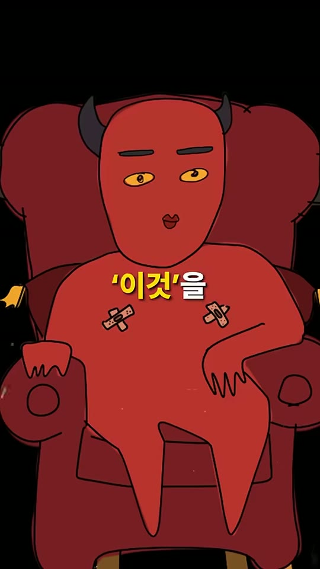
시작중간
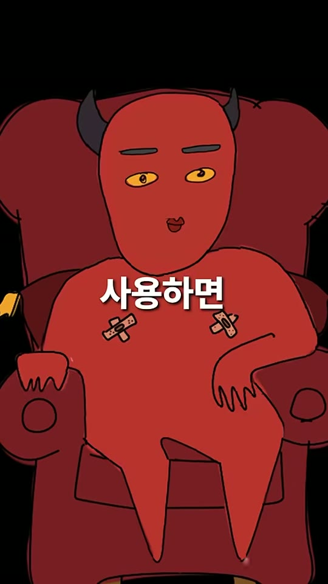
끝
악마 호스트(머리~다리)
안락의자
중앙 1어절 자막
샷FS(의자 포함 전신)앵글아이레벨 정면카메라고정구도검정 캔버스 위 안락의자가 가로 100%를 채우고 악마가 중앙에 푹 기대 앉음. 머리 상단 y≈17%, 의자 다리 y≈99%. 시선 정면(반쯤 감긴 눈). 자막은 가슴(반창고) 높이 y≈50%동작악마 호스트가 의자에 삐딱하게 기대 앉아 반쯤 감은 눈으로 정면을 봄, 입만 살짝 움직임대사내레이터(여): 이것을 잘 사용하면화면 자막'이것'을 → 사용하면 → 잘 (1어절씩, '이것' 따옴표 포함 노랑 #F7DE12)들어오는 전환없음(콜드오픈, 인트로·로고 없이 첫 프레임부터 호스트+자막)효과음/음악BGM 인(잔잔한 로파이, 추정)역할훅 1 — '이것'이라는 지시어로 정체를 숨겨 궁금증 유발(오픈 루프)
1순위
minimax-h3
대사 오디오+입모양 동시 생성, 무료·팀 기본(2D라 입만 살짝 움직이면 충분)
2순위
kling-v3-omni
레퍼런스 이미지로 2D 캐릭터 선·색 일관성 유지하며 립싱크
3순위
hailuo-2-3
눈 굴리기·입 벌림 같은 과장 코믹 리액션이 빠르고 싸다
① 이미지 프롬프트 (원본 클론)9:16 vertical 1080x1920, full shot, flat 2D hand-drawn webcomic cartoon devil mascot with thick black ink outlines and flat cel colors, tall egg-shaped brick-red head that merges into the body (#B4352C), two small curved charcoal horns (#322831), half-lidded amber-yellow eyes with tiny dark pupils, thick straight dark eyebrows, small puckered dark-red lips, two crossed beige band-aids on the chest, long thin arms with three-fingered hands, deadpan smug expression, no gradients, no 3D shading, slouching lazily in a dark maroon wingback armchair (#771E22) with short wooden legs, pure black background (#000000), character centered, head top at 17% of frame height, chair filling the full width, eye-level straight-on
② 영상 프롬프트 (원본 클론)Locked-off camera, limited 2D animation at 12fps: the devil mascot stays slouched, blinks once, lips move slightly in sync with a calm female Korean narrator, tiny head tilt. Duration 1.20s. Line: '이것을 잘 사용하면'
③ 동물 버전 이미지 프롬프트9:16 vertical 1080x1920, full shot, flat 2D hand-drawn webcomic cartoon hamster mascot 'Hamzzi' with thick black ink outlines and flat cel colors, chubby round golden-orange hamster (#E39A3B) with cream cheeks and belly (#F6E3C4), tiny red devil-horn headband (brand nod), half-lidded deadpan black eyes, thick short dark eyebrows, tiny pink nose, small puckered mouth, two crossed beige band-aids on the chest, tiny pink paws, no gradients, no 3D shading, slouching lazily in a dark maroon wingback armchair (#771E22) with short wooden legs, pure black background (#000000), hamster centered, head top at 17% of frame height, chair filling the full width, eye-level straight-on
④ 동물 버전 영상 프롬프트Locked-off camera, limited 2D animation at 12fps: Hamzzi stays slouched in the armchair, whiskers twitch, blinks once, small mouth moves in sync with a calm female Korean narrator. Duration 1.20s. Line: '이것을 잘 사용하면'
네거티브3D render, clay, photoreal, realistic human, live-action presenter, gradient shading, extra limbs, extra fingers, extra horns, deformed face, open mouth teeth close-up, text, letters, captions, watermark, logo, busy background, blurry, low resolution, jpeg artifacts
컷 2 · 훅 2 — '마음 조종' 약속을 시각 은유(꼭두각시)로 즉시 보여줌
1.2s → 3.67s (2.47s)
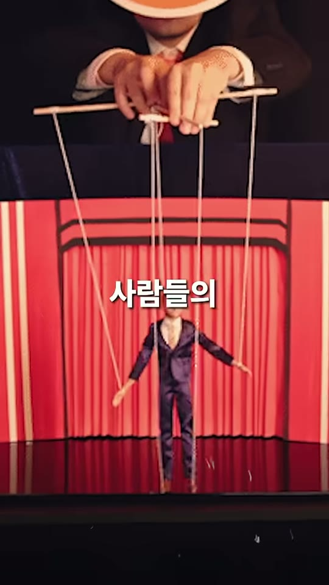
시작
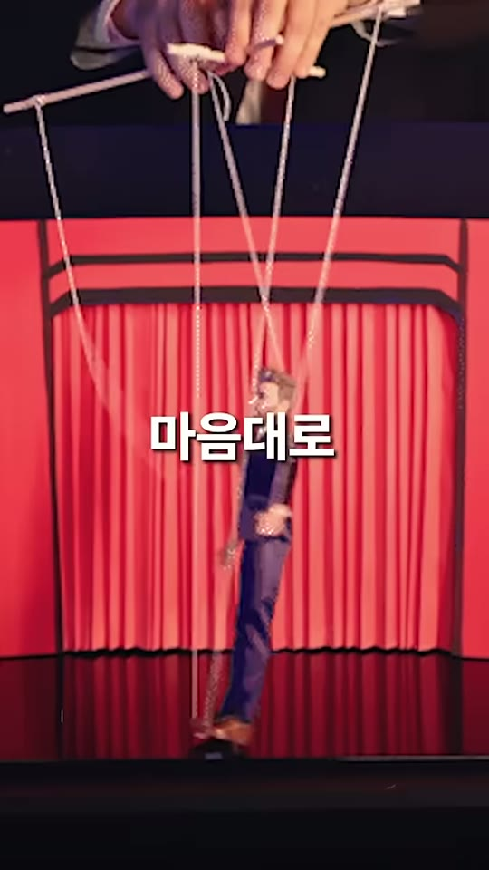
중간
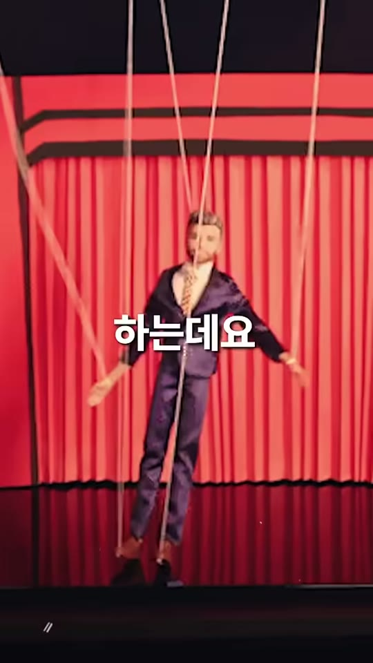
끝
조종하는 손
마리오네트 인형
중앙 1어절 자막
샷MS(인형 전신)앵글아이레벨, 무대 정면카메라고정(스톡 원본 그대로), 인형만 줄에 흔들림구도빨간 무대 커튼 앞 정장 마리오네트 인형이 중앙, 화면 상단에서 사람 손이 조종 막대를 쥠(손 y 0~15%). 풀블리드동작위에서 손이 줄을 당겨 정장 인형이 팔을 벌리며 흔들림대사내레이터: 사람들의 마음을 마음대로 조종할 수 있다고 하는데요화면 자막사람들의 → 마음을 → 마음대로 → 조종할 → 하는데요들어오는 전환하드컷(대사 '사용하면' 직후, 비유를 바로 시각화)효과음/음악없음(BGM 유지)역할훅 2 — '마음 조종' 약속을 시각 은유(꼭두각시)로 즉시 보여줌
1순위
veo-3-1
실사 B롤 질감·카메라 무브가 가장 자연스러움
2순위
kling-v3
인물 미세 연기·핸드헬드 느낌
3순위
wan-v3-0
저비용 실사 B롤 대안
① 이미지 프롬프트 (원본 클론)9:16 vertical 1080x1920, cinematic stock shot of a wooden marionette in a navy suit hanging on strings on a small theater stage, deep red velvet curtain behind, two anonymous hands in dark suit sleeves holding the wooden control bar at the top of frame, warm stage spotlight, shallow depth of field, 35mm look
② 영상 프롬프트 (원본 클론)The hands tilt the control bar left and right, the marionette lifts its arms and sways, slight dust in the spotlight, locked-off camera, 2.5s
③ 동물 버전 이미지 프롬프트9:16 vertical 1080x1920, a tiny golden hamster puppet in a navy suit hanging on strings on a small theater stage, deep red velvet curtain, a hamster's paws holding the wooden control bar at the top of frame, warm spotlight, shallow depth of field
④ 동물 버전 영상 프롬프트Hamster paws tilt the control bar, the hamster puppet lifts its arms and sways, locked-off camera, 2.5s
네거티브copyrighted cartoon characters, celebrity likeness, real person likeness, brand logos, readable text, subtitles, watermark, extra fingers, deformed hands, distorted faces, blurry, low resolution, jpeg artifacts, oversaturated
컷 3 · 질문 던지기 — 정답 공개 직전 0.47초 텐션
3.67s → 4.13s (0.47s)
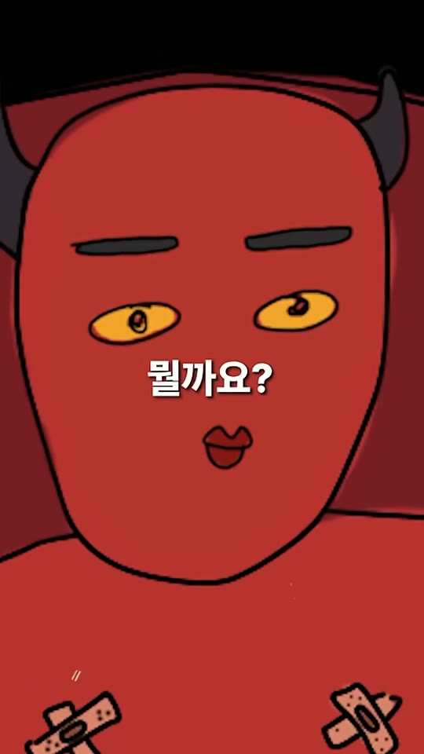
시작
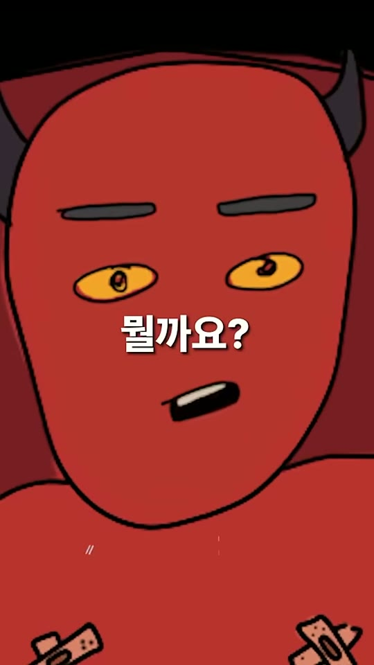
중간
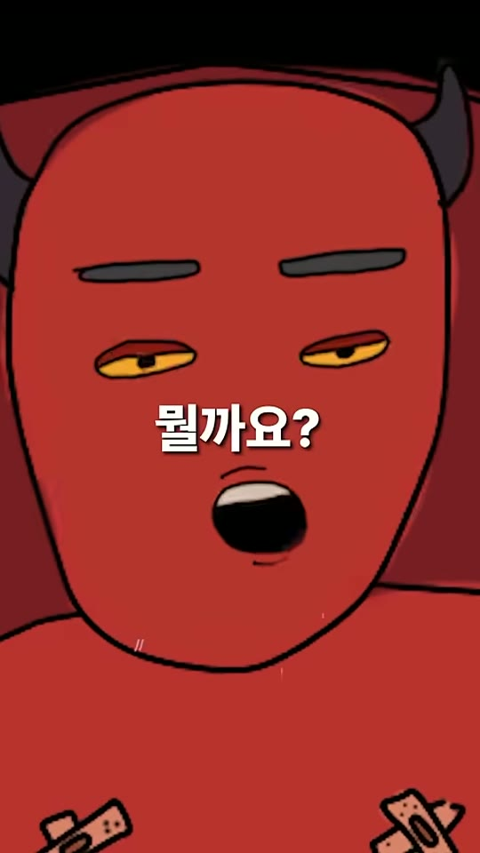
끝
악마 얼굴 클로즈업(뿔은 상단 모서리)
중앙 1어절 자막
샷ECU(얼굴)앵글아이레벨 정면카메라고정구도얼굴이 화면을 꽉 채움(y 8~99%), 뿔이 좌우 상단 모서리에서 잘림, 눈 라인 y≈30%, 자막은 코 아래 y≈50%동작악마가 눈을 치켜뜨고 입을 삐죽 내밀며 질문대사내레이터: 뭘까요?화면 자막뭘까요? (흰색)들어오는 전환하드컷 + 샷 사이즈 점프(FS→ECU)로 리듬 강조효과음/음악팝/뾰롱 효과음(추정)역할질문 던지기 — 정답 공개 직전 0.47초 텐션
1순위
minimax-h3
대사 오디오+입모양 동시 생성, 무료·팀 기본(2D라 입만 살짝 움직이면 충분)
2순위
kling-v3-omni
레퍼런스 이미지로 2D 캐릭터 선·색 일관성 유지하며 립싱크
3순위
hailuo-2-3
눈 굴리기·입 벌림 같은 과장 코믹 리액션이 빠르고 싸다
① 이미지 프롬프트 (원본 클론)9:16 vertical 1080x1920, extreme close-up of the head filling the whole frame, flat 2D hand-drawn webcomic cartoon devil mascot with thick black ink outlines and flat cel colors, tall egg-shaped brick-red head that merges into the body (#B4352C), two small curved charcoal horns (#322831), half-lidded amber-yellow eyes with tiny dark pupils, thick straight dark eyebrows, small puckered dark-red lips, two crossed beige band-aids on the chest, long thin arms with three-fingered hands, deadpan smug expression, no gradients, no 3D shading, expression: eyebrows raised, eyes looking at camera, small puckered lips, horns cut off at the top corners, maroon armchair back barely visible behind, band-aids visible at the bottom edge, straight-on
② 영상 프롬프트 (원본 클론)Static extreme close-up, 2D limited animation: eyes dart once to camera, mouth pops open on the stressed syllable, quick 1-frame squash. Duration 0.47s. Line: '뭘까요?'
③ 동물 버전 이미지 프롬프트9:16 vertical 1080x1920, extreme close-up of the head filling the whole frame, flat 2D hand-drawn webcomic cartoon hamster mascot 'Hamzzi' with thick black ink outlines and flat cel colors, chubby round golden-orange hamster (#E39A3B) with cream cheeks and belly (#F6E3C4), tiny red devil-horn headband (brand nod), half-lidded deadpan black eyes, thick short dark eyebrows, tiny pink nose, small puckered mouth, two crossed beige band-aids on the chest, tiny pink paws, no gradients, no 3D shading, expression: eyebrows raised, eyes looking at camera, small puckered lips, horn headband cut off at the top corners, maroon armchair back barely visible behind, band-aids visible at the bottom edge, straight-on
④ 동물 버전 영상 프롬프트Static extreme close-up of Hamzzi, 2D limited animation: cheeks puff, eyes dart to camera, mouth pops open on the stressed syllable. Duration 0.47s. Line: '뭘까요?'
네거티브3D render, clay, photoreal, realistic human, live-action presenter, gradient shading, extra limbs, extra fingers, extra horns, deformed face, open mouth teeth close-up, text, letters, captions, watermark, logo, busy background, blurry, low resolution, jpeg artifacts
컷 4 · 정답 제시 — 영어 원어+한국어 번역 2단 공개(채널의 영어 교육 톤)
4.13s → 5.7s (1.57s)
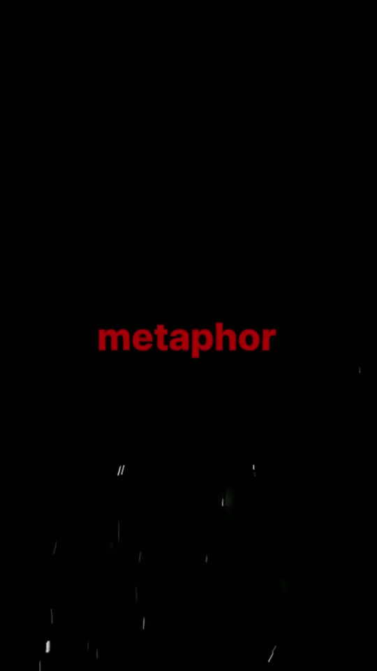
시작
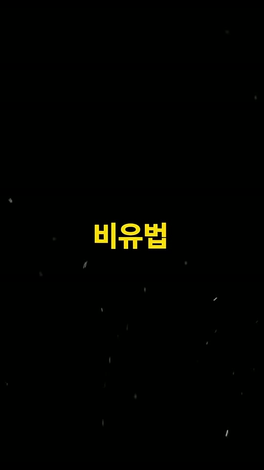
끝
키워드 텍스트
샷그래픽 카드앵글정면카메라고정(텍스트만 교체)구도순검정 배경 중앙(y≈50%)에 단어 한 개, 여백 전체 + 흰 먼지 입자동작텍스트 카드: 빨간 'metaphor' → 노란 '비유법'으로 교체대사내레이터: 바로 메타포, 비유법입니다화면 자막metaphor(영문, 딥레드 #9C0009, 굵은 산세리프) → 비유법(노랑 #F6DF17)들어오는 전환하드컷 → 검정 카드(정답 공개용 '숨 고르기' 화면)효과음/음악정답 공개 '띵' 효과음(추정)역할정답 제시 — 영어 원어+한국어 번역 2단 공개(채널의 영어 교육 톤)
1순위
(AI 불필요) FFmpeg/HyperFrames 그래픽
검정 배경+텍스트/막대그래프는 코드로 픽셀 단위 재현이 정확
① 이미지 프롬프트 (원본 클론)9:16 vertical 1080x1920 pure black background with sparse white film-dust specks, a single bold word 'metaphor' in deep red (#9C0009) centered at 50% height, clean sans-serif, nothing else
② 영상 프롬프트 (원본 클론)(AI 불필요) 4.133→4.93s 'metaphor' 빨강, 4.93→5.70s '비유법' 노랑으로 하드 교체, 등장 시 70%→100% 스케일 팝 120ms
③ 동물 버전 이미지 프롬프트Same black text card; optionally a tiny Hamzzi paw pointing at the word from the bottom-right corner
④ 동물 버전 영상 프롬프트(AI 불필요) 텍스트 교체만, 햄찌 발 0.3s 톡 등장(선택)
네거티브any photo or illustration, gradients, 3D text, bevel, glow, misspelled Korean, broken Hangul, random letters, watermark, logo, noise banding
컷 5 · 권위 부여(대학 연구) — 신뢰도 확보
5.7s → 8.6s (2.9s)
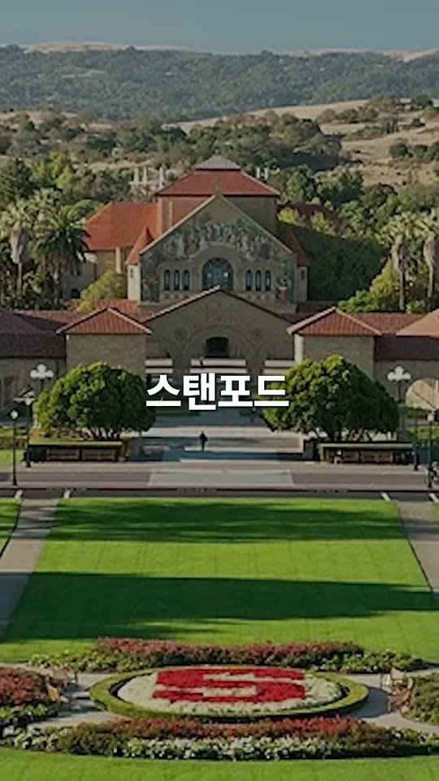
시작
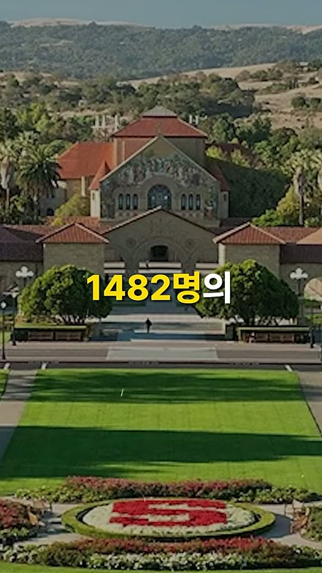
중간
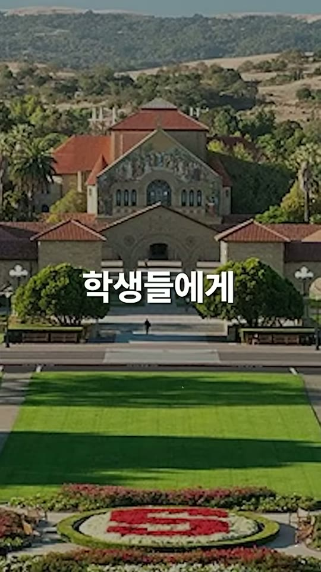
끝
대학 본관
잔디 광장
중앙 1어절 자막
샷EWS(항공 부감)앵글하이 앵글 드론카메라아주 느린 드론 전진(추정)구도풀블리드. 상단 1/3에 붉은 기와 대학 본관+산, 중앙 가로로 나무 줄, 하단 1/3 잔디광장과 꽃 로고 화단. 자막은 나무 줄 위 y≈50%동작대학 캠퍼스 항공샷대사내레이터: 스탠포드 대학 연구팀은 1482명의 학생들에게화면 자막스탠포드 → 대학 → 연구팀은 → 1482명의(숫자+명 노랑) → 학생들에게들어오는 전환하드컷효과음/음악없음역할권위 부여(대학 연구) — 신뢰도 확보
1순위
veo-3-1
실사 B롤 질감·카메라 무브가 가장 자연스러움
2순위
kling-v3
인물 미세 연기·핸드헬드 느낌
3순위
wan-v3-0
저비용 실사 B롤 대안
① 이미지 프롬프트 (원본 클론)9:16 vertical 1080x1920, aerial drone shot of a fictional Spanish-colonial style university campus: sandstone main hall with red tile roofs and arches, palm trees, rolling golden hills behind, a huge manicured lawn oval with a red flower bed in front, late afternoon sun, crisp detail
② 영상 프롬프트 (원본 클론)Very slow forward drone push over the lawn toward the main hall, gentle parallax of palm trees, 2.9s
③ 동물 버전 이미지 프롬프트9:16 vertical 1080x1920, aerial shot of a miniature hamster university campus: sandstone hall with red tile roofs built at hamster scale, sunflower-seed shaped flower bed on the lawn, tiny hamsters walking on paths, warm afternoon sun
④ 동물 버전 영상 프롬프트Slow forward drone push over the hamster campus lawn, tiny hamsters scurry, 2.9s
네거티브copyrighted cartoon characters, celebrity likeness, real person likeness, brand logos, readable text, subtitles, watermark, extra fingers, deformed hands, distorted faces, blurry, low resolution, jpeg artifacts, oversaturated
컷 6 · 실험 설정 설명 — A/B 두 조건을 시각 라벨로 각인
8.6s → 12.2s (3.6s)
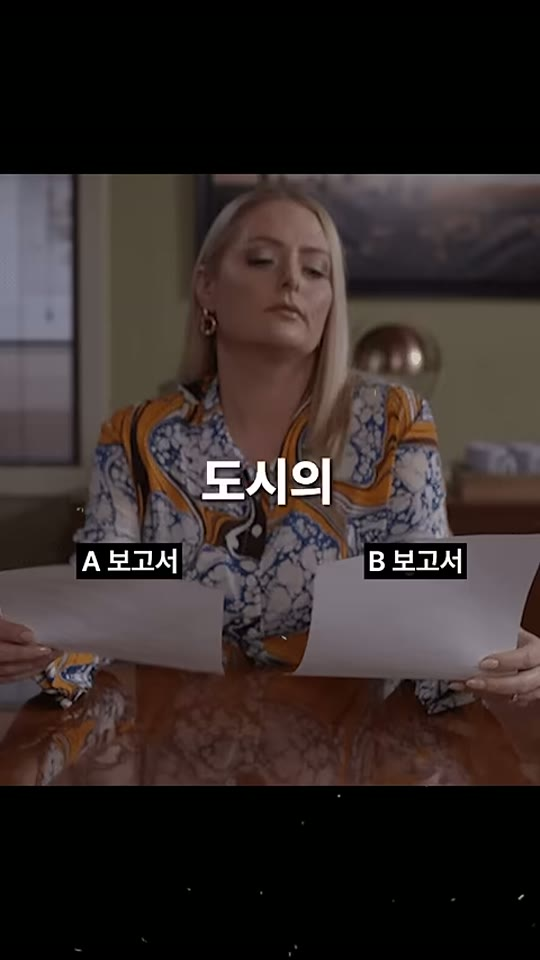
시작
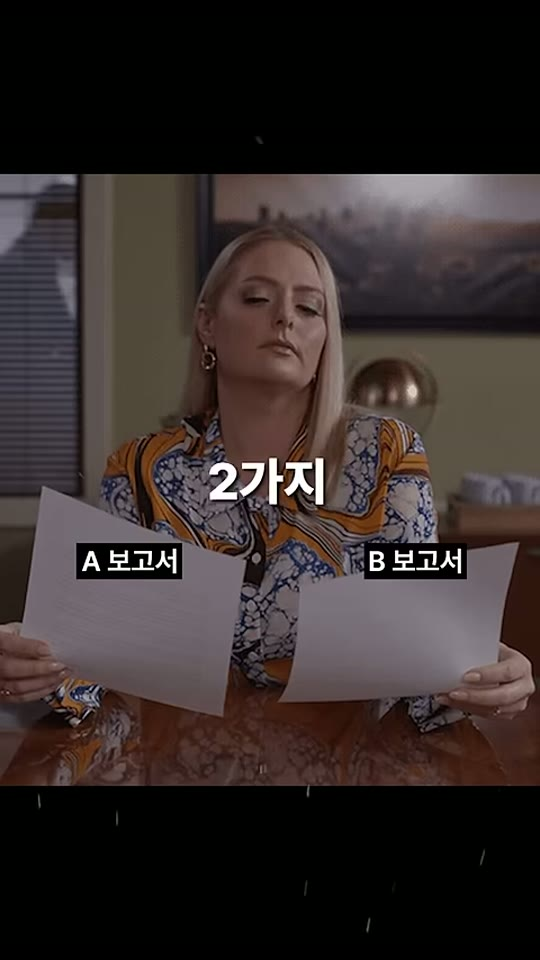
중간
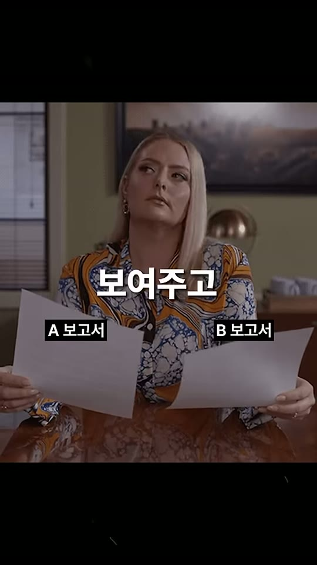
끝
여성(상반신)
A 보고서 태그
B 보고서 태그
중앙 1어절 자막
샷MS앵글아이레벨 정면카메라고정. 병합: 8.60 / 10.63 (자막 교체로 오검출)구도레터박스 밴드 y 18~82%(검정 상하). 금발 여성이 책상에서 종이 두 장을 좌우로 들고 봄. 종이 위에 'A 보고서'(좌, x≈15%, y≈58%) 'B 보고서'(우, x≈68%, y≈58%) 검정 박스 흰 글씨 라벨동작여성이 두 보고서를 번갈아 훑어보며 고개를 살짝 기울임대사내레이터: 도시의 범죄에 관한 두 가지 보고서를 보여주고 해결 방법을 제시하게 했습니다화면 자막도시의 → 범죄에 → 2가지 → 보고서를 → 해결 → 방법을 → 제시하게 / 고정 라벨 'A 보고서' 'B 보고서'(검정 박스)들어오는 전환하드컷효과음/음악종이 바스락(추정)역할실험 설정 설명 — A/B 두 조건을 시각 라벨로 각인
1순위
seedance-2-0
표정 클로즈업(찡그림·놀람) 미세표정 강점
2순위
kling-v3
인물 감정 연기 안정적
3순위
veo-3-1
실사 질감 최상
① 이미지 프롬프트 (원본 클론)9:16 vertical 1080x1920 letterboxed: a near-square cinematic band from 18% to 82% height on black. Inside: a fictional blonde businesswoman in a patterned silk blouse sits at a wooden desk in a warm office, holding two sheets of paper spread left and right, reading with a skeptical look, shallow depth of field, muted film look
② 영상 프롬프트 (원본 클론)She glances from the left sheet to the right sheet, slight head tilt, lips pursed, locked-off, 3.6s
③ 동물 버전 이미지 프롬프트Same letterboxed band: a golden hamster in a patterned silk blouse at a wooden desk holding two paper sheets left and right, skeptical squint, warm office, shallow depth of field
④ 동물 버전 영상 프롬프트The hamster glances from left sheet to right sheet, whiskers twitch, locked-off, 3.6s
네거티브copyrighted cartoon characters, celebrity likeness, real person likeness, brand logos, readable text, subtitles, watermark, extra fingers, deformed hands, distorted faces, blurry, low resolution, jpeg artifacts, oversaturated
컷 7 · 전환 멘트 — '재밌는 변수'로 다음 정보 기대감
12.2s → 13.87s (1.67s)
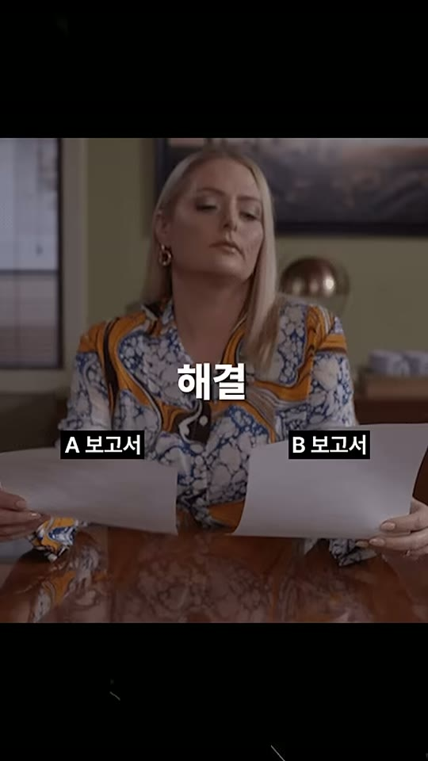
시작
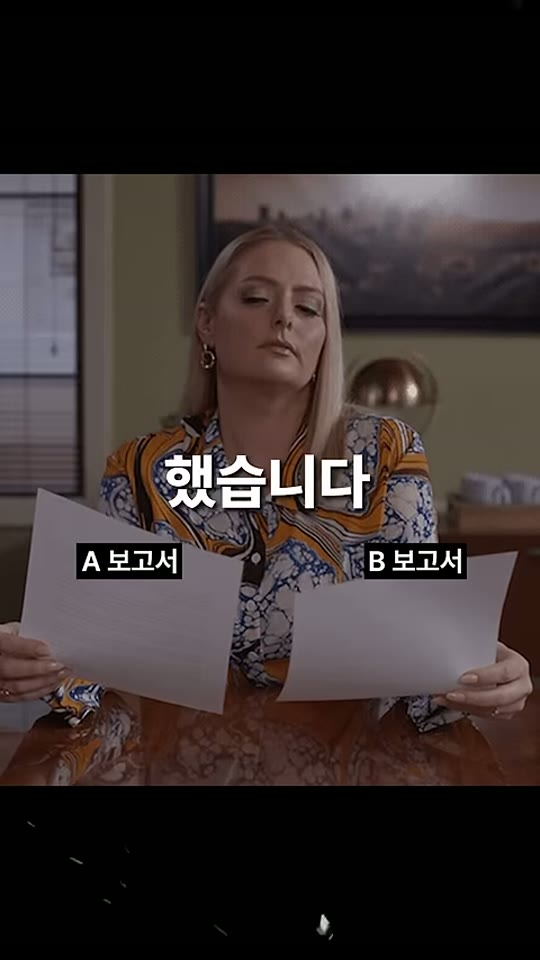
끝
악마+의자
중앙 1어절 자막
샷WS(의자+배경 뿔 실루엣)앵글아이레벨 정면카메라고정(1번보다 한 단계 와이드)구도의자가 화면 y 21~84% 안에 들어오게 축소, 의자 뒤로 큰 검은 뿔 실루엣이 좌우로 뻗음. 자막 y≈50%동작악마가 한쪽 팔걸이에 기대 입을 오물거리며 말함대사내레이터: 여기서 재밌는 변수를 하나 주는데요화면 자막여기서 → 재밌는 → 하나 → 주는데요들어오는 전환하드컷효과음/음악없음역할전환 멘트 — '재밌는 변수'로 다음 정보 기대감
1순위
minimax-h3
대사 오디오+입모양 동시 생성, 무료·팀 기본(2D라 입만 살짝 움직이면 충분)
2순위
kling-v3-omni
레퍼런스 이미지로 2D 캐릭터 선·색 일관성 유지하며 립싱크
3순위
hailuo-2-3
눈 굴리기·입 벌림 같은 과장 코믹 리액션이 빠르고 싸다
① 이미지 프롬프트 (원본 클론)9:16 vertical 1080x1920, full shot, flat 2D hand-drawn webcomic cartoon devil mascot with thick black ink outlines and flat cel colors, tall egg-shaped brick-red head that merges into the body (#B4352C), two small curved charcoal horns (#322831), half-lidded amber-yellow eyes with tiny dark pupils, thick straight dark eyebrows, small puckered dark-red lips, two crossed beige band-aids on the chest, long thin arms with three-fingered hands, deadpan smug expression, no gradients, no 3D shading, slouching lazily in a dark maroon wingback armchair (#771E22) with short wooden legs, pure black background (#000000), character centered, head top at 17% of frame height, chair filling the full width, eye-level straight-on, pulled back wider so the chair occupies 21-84% of frame height, a huge black horn silhouette spreading behind the chair
② 영상 프롬프트 (원본 클론)Locked-off camera, limited 2D animation at 12fps: the devil mascot stays slouched, blinks once, lips move slightly in sync with a calm female Korean narrator, tiny head tilt. Duration 1.67s. Line: '여기서 재밌는 변수를 하나 주는데요'
③ 동물 버전 이미지 프롬프트9:16 vertical 1080x1920, full shot, flat 2D hand-drawn webcomic cartoon hamster mascot 'Hamzzi' with thick black ink outlines and flat cel colors, chubby round golden-orange hamster (#E39A3B) with cream cheeks and belly (#F6E3C4), tiny red devil-horn headband (brand nod), half-lidded deadpan black eyes, thick short dark eyebrows, tiny pink nose, small puckered mouth, two crossed beige band-aids on the chest, tiny pink paws, no gradients, no 3D shading, slouching lazily in a dark maroon wingback armchair (#771E22) with short wooden legs, pure black background (#000000), hamster centered, head top at 17% of frame height, chair filling the full width, eye-level straight-on, pulled back wider so the chair occupies 21-84% of frame height, a huge black horn silhouette spreading behind the chair
④ 동물 버전 영상 프롬프트Locked-off camera, limited 2D animation at 12fps: Hamzzi stays slouched in the armchair, whiskers twitch, blinks once, small mouth moves in sync with a calm female Korean narrator. Duration 1.67s. Line: '여기서 재밌는 변수를 하나 주는데요'
네거티브3D render, clay, photoreal, realistic human, live-action presenter, gradient shading, extra limbs, extra fingers, extra horns, deformed face, open mouth teeth close-up, text, letters, captions, watermark, logo, busy background, blurry, low resolution, jpeg artifacts
컷 8 · 비교 퀴즈 — 시청자가 스스로 답을 고르게 해 참여 유도
13.87s → 21.87s (8.0s)
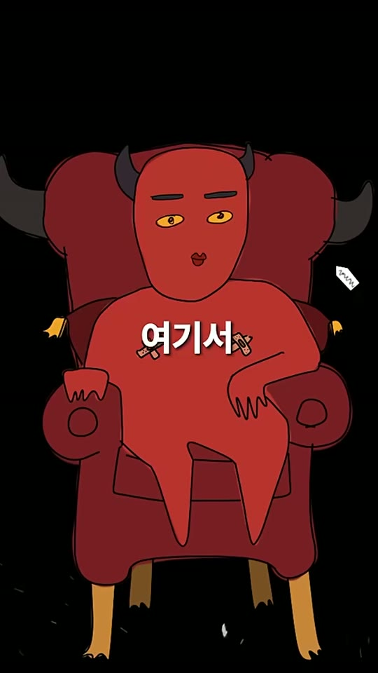
시작
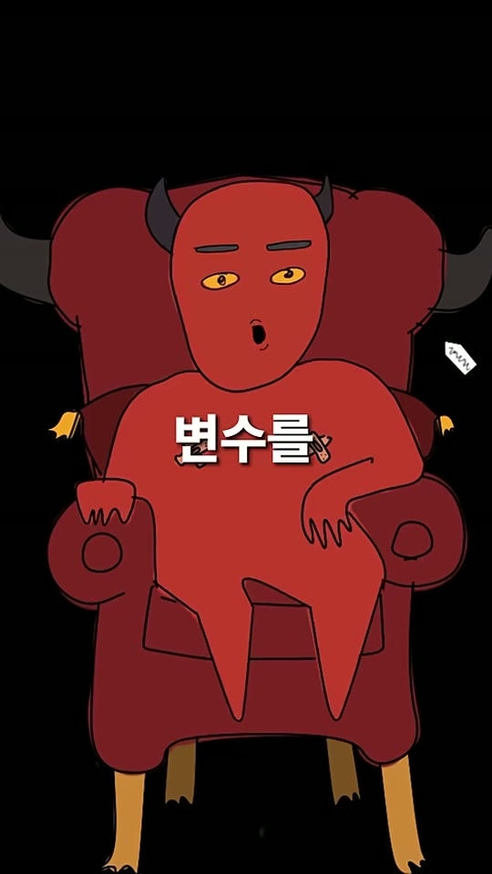
중간
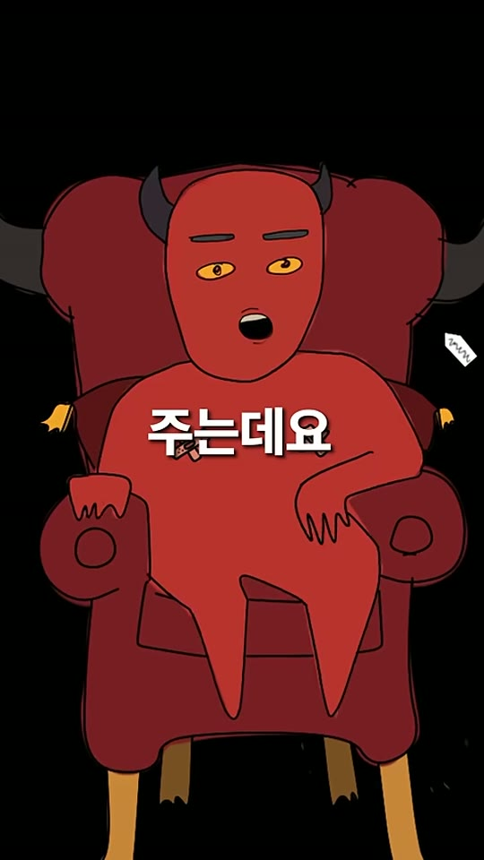
끝
A 패널(사자)
A 텍스트
B 패널(바이러스)
B 텍스트
중앙 1어절 자막
샷그래픽(상하 분할)앵글정면카메라고정. 15.5s에 하단 B 패널 페이드인, 21.5s에 A 패널 확대·B 축소(정답 강조)구도화면 상하 2분할: 상단(y 0~50%) 어두운 사자 입 사진 위 'A' + 2줄 설명, 하단(y 50~100%) 회색 바이러스 3D 위 'B' + 2줄 설명. 중앙 경계선 y≈50%에 1어절 자막동작텍스트 그래픽: A(짐승) 먼저, B(바이러스) 페이드인, 마지막에 A 확대대사내레이터: A는 범죄를 짐승이라고 비유했고, B는 바이러스로 비유를 한 거죠. 둘 중 어느 쪽을 읽은 학생들이 더 강력한 처벌을 해결법으로 제시했을까요? 바로 A입니다화면 자막패널: 'A / 짐승처럼 이웃들 속에 숨어 도시를 위협하는 범죄들' 'B / 바이러스처럼 이웃들을 괴롭히며 도시를 감염시키는 범죄들' (짐승·바이러스 노랑). 중앙: 범죄를 → 짐승이라고(노랑) → 비유했고 → B는 → 바이러스로(노랑) → … → 제시했을까요? → 바로 → A입니다들어오는 전환하드컷 → 그래픽 전환효과음/음악B 등장 '슉' 효과음, 'A입니다'에 정답 효과음(추정)역할비교 퀴즈 — 시청자가 스스로 답을 고르게 해 참여 유도
1순위
(AI 불필요) FFmpeg/HyperFrames 그래픽
검정 배경+텍스트/막대그래프는 코드로 픽셀 단위 재현이 정확
① 이미지 프롬프트 (원본 클론)9:16 vertical 1080x1920 split screen: top half a very dark low-key photo of a roaring lion's open jaws with fangs, bottom half a dark grey 3D coronavirus-like particle with red spikes on grey haze, both desaturated and darkened for text overlay
② 영상 프롬프트 (원본 클론)(AI 불필요 — 배경 스틸 2장 + HyperFrames 텍스트) 13.867s A 패널, 15.5s B 패널 400ms 페이드인, 21.5s A 텍스트 112% 스케일업·B 텍스트 70% 축소 200ms
③ 동물 버전 이미지 프롬프트Same split screen but top: a dark silhouette of a snarling wild cat seen from a hamster's point of view (huge fangs), bottom: dark grey sunflower-seed-shaped germ particle with red spikes; both darkened for text
④ 동물 버전 영상 프롬프트(AI 불필요) 동일 타이밍의 텍스트 애니메이션
네거티브any photo or illustration, gradients, 3D text, bevel, glow, misspelled Korean, broken Hangul, random letters, watermark, logo, noise banding
컷 9 · 근거 수치 제시 — 숫자를 막대로 시각화해 기억시키기
21.87s → 29.1s (7.23s)
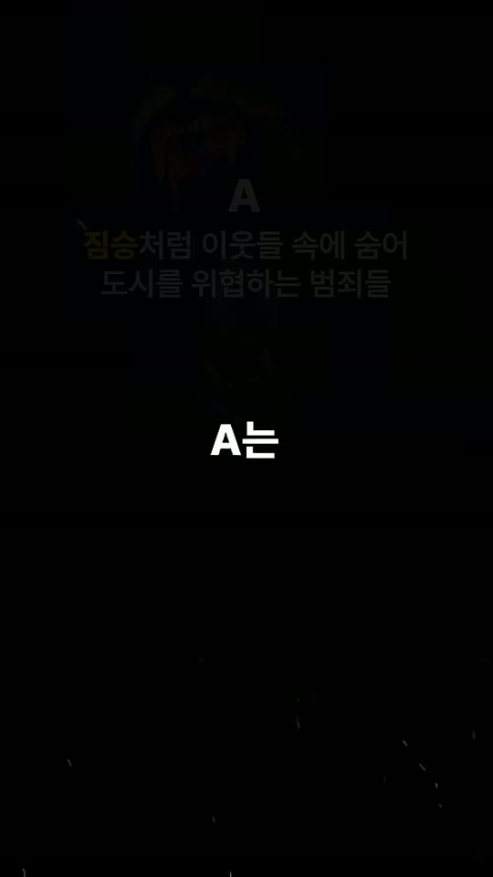
시작
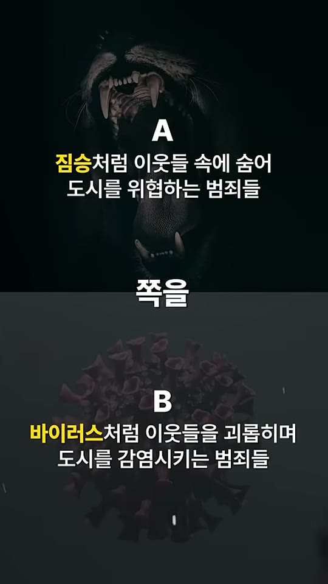
중간
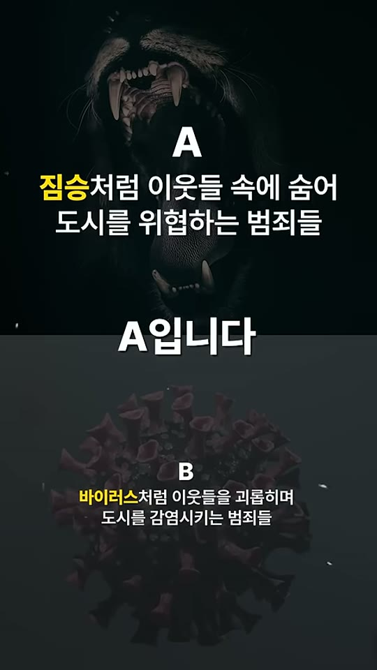
끝
그래프 제목
L자 축
75% 빨강 막대
25% 노랑 막대
중앙 1어절 자막
샷그래픽(막대그래프)앵글정면카메라고정. 막대 성장 애니메이션구도검정 배경. 상단 y≈9% 제목 'A (짐승 비유)'(짐승 노랑), 좌측 L자 흰 축(x 13~40%, y 18~84%), 빨간 막대(#A30003) 75%, 노란 막대(#F8DD08) 25%. 자막은 막대 위 y≈50%동작빨간 막대가 아래에서 위로 자라며 '75%' 라벨, 25.5s 노란 막대 '25%' 성장대사내레이터: A를 읽은 학생 중 75%가 감옥 건설 등 처벌 중심의 해결책을 제안했고, 25%만이 교육과 같은 사회적 개혁을 제시했습니다화면 자막읽은 → 중 → 75%가 → 건설 → 처벌 → 중심의 → 제안했고 → 25%만이 → 교육과 → 같은 → 개혁을 → 제시했습니다들어오는 전환하드컷효과음/음악막대 성장 '뿅' 효과음(추정)역할근거 수치 제시 — 숫자를 막대로 시각화해 기억시키기
1순위
(AI 불필요) FFmpeg/HyperFrames 그래픽
검정 배경+텍스트/막대그래프는 코드로 픽셀 단위 재현이 정확
① 이미지 프롬프트 (원본 클론)9:16 vertical 1080x1920 pure black background with faint white dust specks, minimal bar chart: white L-shaped axes on the left half, a tall deep-red bar (#A30003) labeled '75%' and a short yellow bar (#F8DD08) labeled '25%', title at top 'A (짐승 비유)' in white bold with the word 짐승 in yellow
② 영상 프롬프트 (원본 클론)(AI 불필요) 22.2s 빨간 막대 0→75% 600ms ease-out, 25.5s 노란 막대 0→25% 400ms, 퍼센트 라벨 카운트업
③ 동물 버전 이미지 프롬프트Same chart; a tiny Hamzzi sits on top of the red bar with arms crossed
④ 동물 버전 영상 프롬프트(AI 불필요) 막대 성장 + 햄찌 스티커 바운스(선택)
네거티브any photo or illustration, gradients, 3D text, bevel, glow, misspelled Korean, broken Hangul, random letters, watermark, logo, noise banding
컷 10 · 전환 — A와 B 대조의 경첩(0.63초 리셋 컷)
29.1s → 29.73s (0.63s)
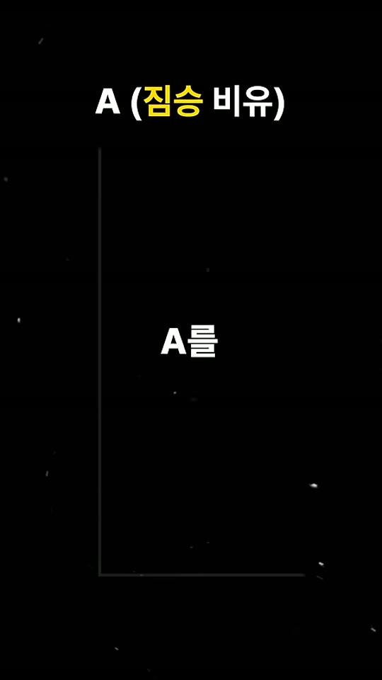
시작
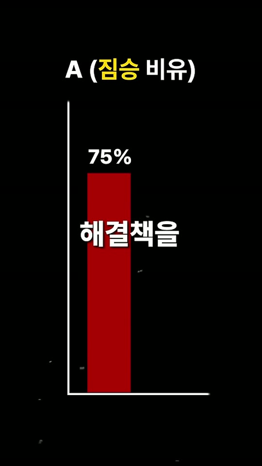
중간
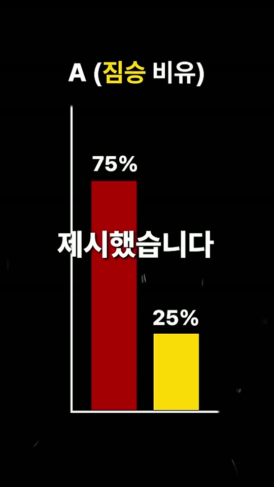
끝
악마 얼굴 클로즈업(뿔은 상단 모서리)
중앙 1어절 자막
샷ECU(얼굴)앵글아이레벨 정면카메라고정구도얼굴이 화면 꽉 채움, 입 크게 벌림, 자막 y≈50%동작악마가 눈썹을 올리고 입을 크게 벌려 '반면!'대사내레이터: 반면화면 자막반면들어오는 전환하드컷(그래프→호스트, 대조 전환 멘트 강조)효과음/음악팝(추정)역할전환 — A와 B 대조의 경첩(0.63초 리셋 컷)
1순위
minimax-h3
대사 오디오+입모양 동시 생성, 무료·팀 기본(2D라 입만 살짝 움직이면 충분)
2순위
kling-v3-omni
레퍼런스 이미지로 2D 캐릭터 선·색 일관성 유지하며 립싱크
3순위
hailuo-2-3
눈 굴리기·입 벌림 같은 과장 코믹 리액션이 빠르고 싸다
① 이미지 프롬프트 (원본 클론)9:16 vertical 1080x1920, extreme close-up of the head filling the whole frame, flat 2D hand-drawn webcomic cartoon devil mascot with thick black ink outlines and flat cel colors, tall egg-shaped brick-red head that merges into the body (#B4352C), two small curved charcoal horns (#322831), half-lidded amber-yellow eyes with tiny dark pupils, thick straight dark eyebrows, small puckered dark-red lips, two crossed beige band-aids on the chest, long thin arms with three-fingered hands, deadpan smug expression, no gradients, no 3D shading, expression: eyebrows raised high, mouth wide open in surprise, horns cut off at the top corners, maroon armchair back barely visible behind, band-aids visible at the bottom edge, straight-on
② 영상 프롬프트 (원본 클론)Static extreme close-up, 2D limited animation: eyes dart once to camera, mouth pops open on the stressed syllable, quick 1-frame squash. Duration 0.63s. Line: '반면'
③ 동물 버전 이미지 프롬프트9:16 vertical 1080x1920, extreme close-up of the head filling the whole frame, flat 2D hand-drawn webcomic cartoon hamster mascot 'Hamzzi' with thick black ink outlines and flat cel colors, chubby round golden-orange hamster (#E39A3B) with cream cheeks and belly (#F6E3C4), tiny red devil-horn headband (brand nod), half-lidded deadpan black eyes, thick short dark eyebrows, tiny pink nose, small puckered mouth, two crossed beige band-aids on the chest, tiny pink paws, no gradients, no 3D shading, expression: eyebrows raised high, mouth wide open in surprise, horn headband cut off at the top corners, maroon armchair back barely visible behind, band-aids visible at the bottom edge, straight-on
④ 동물 버전 영상 프롬프트Static extreme close-up of Hamzzi, 2D limited animation: cheeks puff, eyes dart to camera, mouth pops open on the stressed syllable. Duration 0.63s. Line: '반면'
네거티브3D render, clay, photoreal, realistic human, live-action presenter, gradient shading, extra limbs, extra fingers, extra horns, deformed face, open mouth teeth close-up, text, letters, captions, watermark, logo, busy background, blurry, low resolution, jpeg artifacts
컷 11 · 대조 결과 — 20% 차이를 한 화면 비교로 '와' 포인트
29.73s → 37.73s (8.0s)
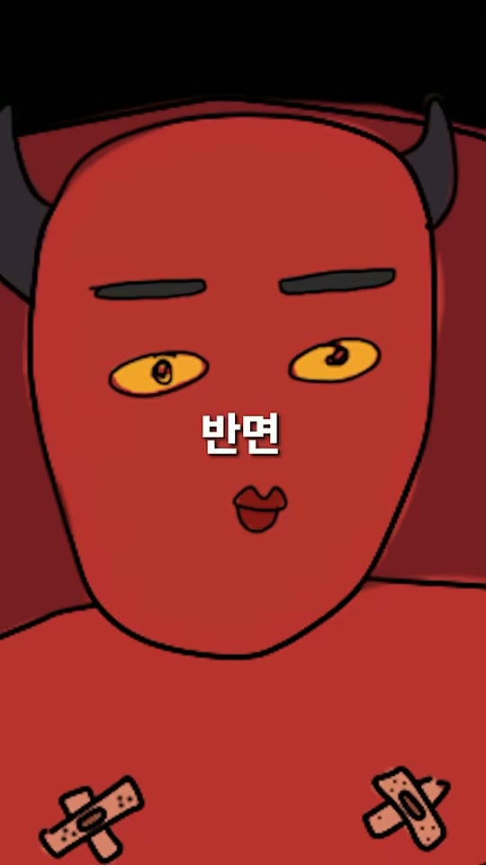
시작
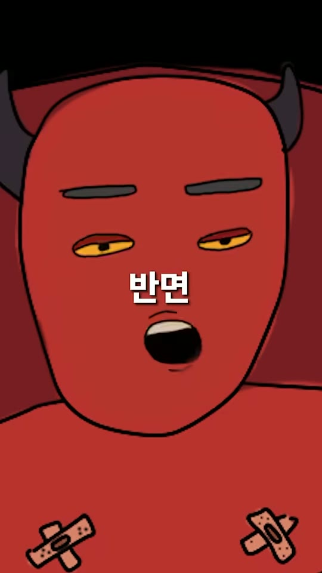
중간
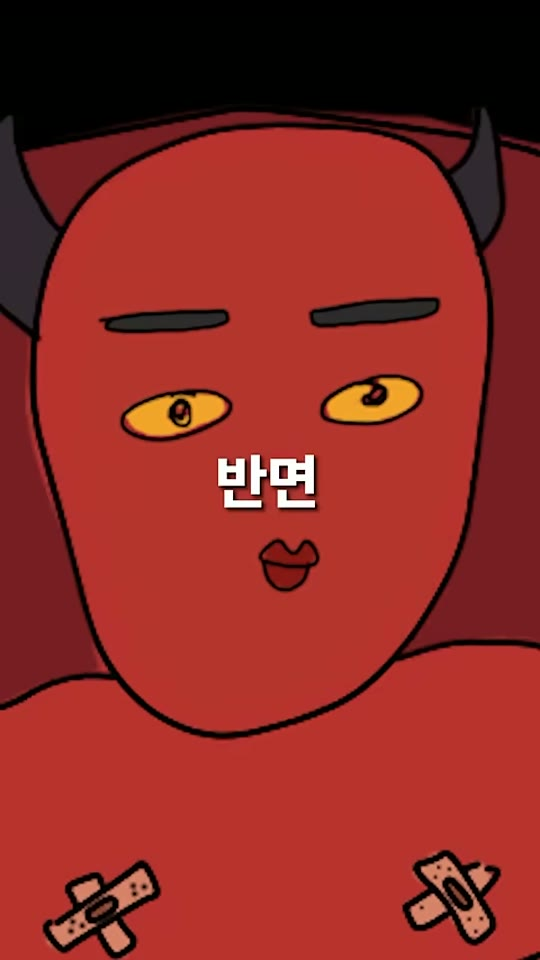
끝
B 그래프
비교 2그래프(35.5s~)
중앙 1어절 자막
샷그래픽(막대그래프→비교)앵글정면카메라고정. 35.5s 레이아웃 축소 이동: 좌측에 흐린 A 그래프, 우측에 B 그래프 → 36.0s 두 그래프 나란히구도B 그래프는 9번과 같은 규격(제목 'B (바이러스 비유)', 바이러스 노랑). 빨강 56% / 노랑 44%. 35.5s부터 두 그래프가 가로로 나란히(각 폭 ~40%, y 8~28%) 축소동작B 막대 성장 후 A와 나란히 비교 배치대사내레이터: 반면 B를 읽은 학생들은 56%가 처벌 중심의 해결책을 제안했고, 44%가 사회적 개혁을 제안했습니다. 이는 A보다 20%나 높은 수치입니다화면 자막B를 → 학생들은 → 56%가 → 처벌 → 중심의 → 제안했고 → 44%가 → 사회적 → 개혁을 → 제안했습니다 → 이는 → A보다 → 20%나(노랑) → 수치입니다들어오는 전환하드컷효과음/음악막대 성장 효과음(추정)역할대조 결과 — 20% 차이를 한 화면 비교로 '와' 포인트
1순위
(AI 불필요) FFmpeg/HyperFrames 그래픽
검정 배경+텍스트/막대그래프는 코드로 픽셀 단위 재현이 정확
① 이미지 프롬프트 (원본 클론)9:16 vertical 1080x1920 pure black background, minimal bar chart titled 'B (바이러스 비유)' with 바이러스 in yellow, deep-red bar 56% and yellow bar 44%, white L-shaped axes; later both A and B charts side by side at the top
② 영상 프롬프트 (원본 클론)(AI 불필요) 30.3s 빨강 0→56% 600ms, 33.3s 노랑 0→44% 400ms, 35.5s 두 그래프 400ms 축소·이동해 나란히, A 막대는 35.5~36.0s 동안 50% 투명→100%
③ 동물 버전 이미지 프롬프트Same charts with a tiny Hamzzi peeking between the two charts
④ 동물 버전 영상 프롬프트(AI 불필요) 동일 그래프 애니메이션
네거티브any photo or illustration, gradients, 3D text, bevel, glow, misspelled Korean, broken Hangul, random letters, watermark, logo, noise banding
컷 12 · 밈 리액션 — '받아 적어!' 수준의 중요 정보 신호 + 웃음
37.73s → 40.33s (2.6s)
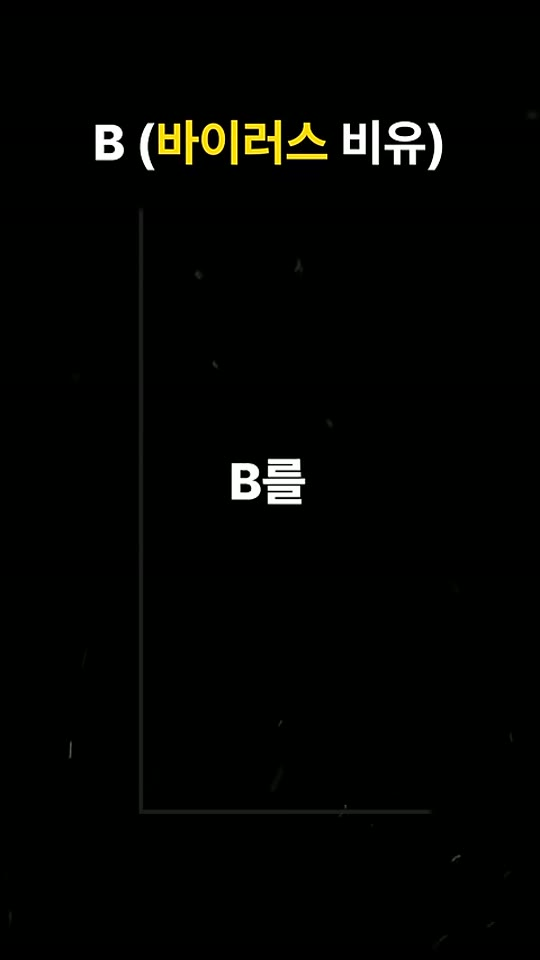
시작
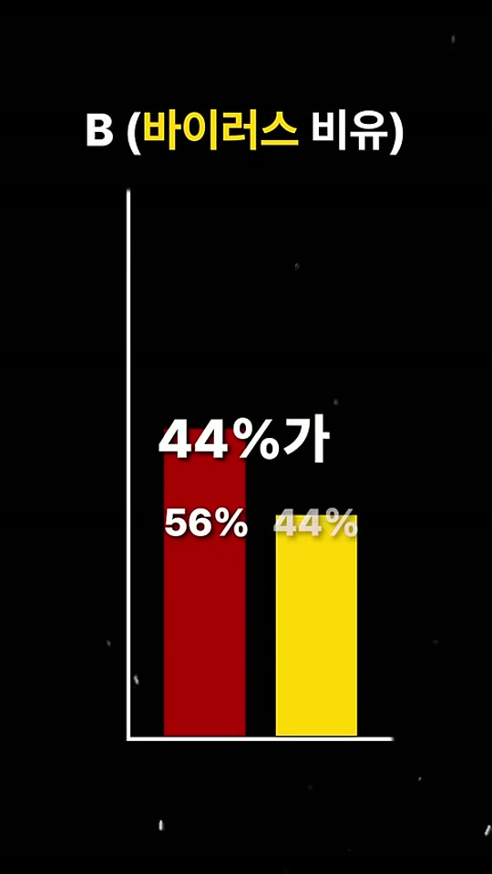
중간
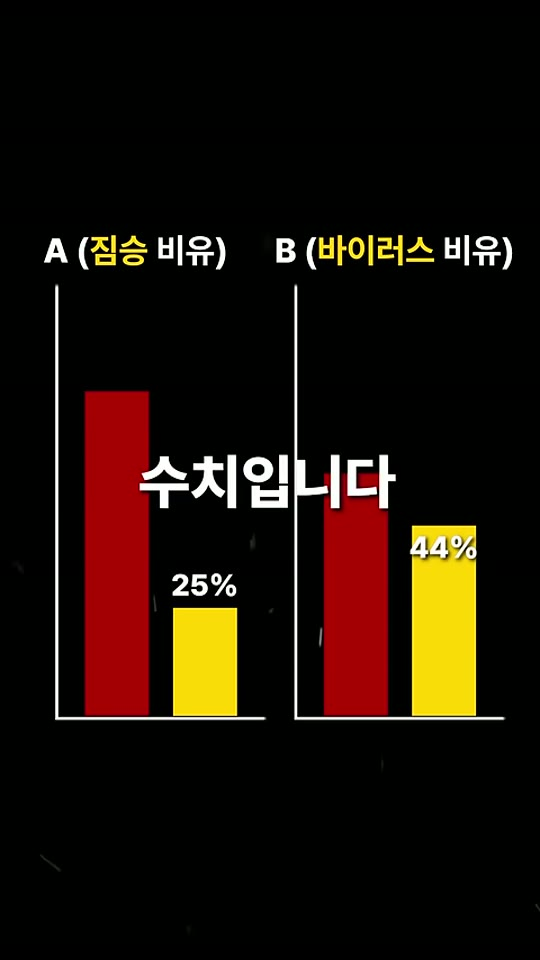
끝
밈 캐릭터
중앙 1어절 자막
샷MCU앵글살짝 로우카메라고정 원본 밈 루프. 병합: 37.73·37.87·38.00·38.10·38.23·38.30·38.53·38.60·38.77·38.83·38.90·39.00·39.13·39.20·40.13·40.20 (프레임 과장 애니메이션을 컷으로 오검출)구도레터박스 밴드 y 17~83%. 노란 스펀지 캐릭터가 메모장에 연필로 미친 듯이 필기 → 눈 풀린 채 혀 내밀고 → 눈 질끈 감음동작밈 캐릭터가 눈이 뒤집힐 정도로 빠르게 필기하다가 지쳐 눈을 감음대사내레이터: 비유법은 사람의 무의식에 엄청난 영향을 줍니다화면 자막비유법은 → 무의식에 → 엄청난 → 영향을 → 줍니다들어오는 전환하드컷(그래프 뒤 첫 밈 = 긴장 해소)효과음/음악연필 사각사각(추정)역할밈 리액션 — '받아 적어!' 수준의 중요 정보 신호 + 웃음
1순위
hailuo-2-3
과장된 만화 리액션(밈) 동작이 빠르고 저렴
2순위
pixverse-v6
2D 카툰 스타일 유지력 좋음
3순위
grok-imagine-video-1-5
짧은 코믹 루프 대안
① 이미지 프롬프트 (원본 클론)9:16 vertical letterboxed 2D cartoon band (17-83% height): an original yellow square sea-creature cartoon character with huge eyes frantically scribbling in a notepad with a pencil, bulging eyes, tongue out, underwater dark green curtain background, thick outlines, TV animation style
② 영상 프롬프트 (원본 클론)Frantic scribbling, eyes bulge and roll, then squeezes eyes shut exhausted, smear frames, 2.6s
③ 동물 버전 이미지 프롬프트9:16 letterboxed 2D cartoon band: Hamzzi hamster frantically scribbling in a tiny notepad with a pencil, bulging eyes, tongue out, then squeezes eyes shut, thick outlines, TV animation style
④ 동물 버전 영상 프롬프트Hamzzi scribbles frantically with smear frames, eyes roll, then squeezes eyes shut, 2.6s
네거티브copyrighted cartoon characters, celebrity likeness, real person likeness, brand logos, readable text, subtitles, watermark, extra fingers, deformed hands, distorted faces, blurry, low resolution, jpeg artifacts, oversaturated
컷 13 · 빌드업 — 더 놀라운 사실 예고
40.33s → 40.83s (0.5s)
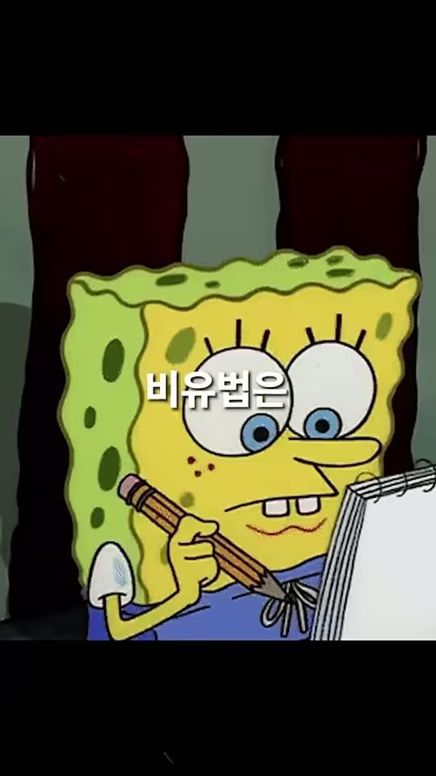
시작끝
악마 호스트(머리~다리)
안락의자
중앙 1어절 자막
샷FS(의자 전신)앵글아이레벨 정면카메라고정구도1번과 같은 의자 전신 구도(y 14~88%)동작악마가 입을 벌리고 한쪽 눈썹을 올림대사내레이터: 심지어화면 자막심지어들어오는 전환하드컷효과음/음악없음역할빌드업 — 더 놀라운 사실 예고
1순위
minimax-h3
대사 오디오+입모양 동시 생성, 무료·팀 기본(2D라 입만 살짝 움직이면 충분)
2순위
kling-v3-omni
레퍼런스 이미지로 2D 캐릭터 선·색 일관성 유지하며 립싱크
3순위
hailuo-2-3
눈 굴리기·입 벌림 같은 과장 코믹 리액션이 빠르고 싸다
① 이미지 프롬프트 (원본 클론)9:16 vertical 1080x1920, full shot, flat 2D hand-drawn webcomic cartoon devil mascot with thick black ink outlines and flat cel colors, tall egg-shaped brick-red head that merges into the body (#B4352C), two small curved charcoal horns (#322831), half-lidded amber-yellow eyes with tiny dark pupils, thick straight dark eyebrows, small puckered dark-red lips, two crossed beige band-aids on the chest, long thin arms with three-fingered hands, deadpan smug expression, no gradients, no 3D shading, slouching lazily in a dark maroon wingback armchair (#771E22) with short wooden legs, pure black background (#000000), character centered, head top at 17% of frame height, chair filling the full width, eye-level straight-on
② 영상 프롬프트 (원본 클론)Locked-off camera, limited 2D animation at 12fps: the devil mascot stays slouched, blinks once, lips move slightly in sync with a calm female Korean narrator, tiny head tilt. Duration 0.50s. Line: '심지어'
③ 동물 버전 이미지 프롬프트9:16 vertical 1080x1920, full shot, flat 2D hand-drawn webcomic cartoon hamster mascot 'Hamzzi' with thick black ink outlines and flat cel colors, chubby round golden-orange hamster (#E39A3B) with cream cheeks and belly (#F6E3C4), tiny red devil-horn headband (brand nod), half-lidded deadpan black eyes, thick short dark eyebrows, tiny pink nose, small puckered mouth, two crossed beige band-aids on the chest, tiny pink paws, no gradients, no 3D shading, slouching lazily in a dark maroon wingback armchair (#771E22) with short wooden legs, pure black background (#000000), hamster centered, head top at 17% of frame height, chair filling the full width, eye-level straight-on
④ 동물 버전 영상 프롬프트Locked-off camera, limited 2D animation at 12fps: Hamzzi stays slouched in the armchair, whiskers twitch, blinks once, small mouth moves in sync with a calm female Korean narrator. Duration 0.50s. Line: '심지어'
네거티브3D render, clay, photoreal, realistic human, live-action presenter, gradient shading, extra limbs, extra fingers, extra horns, deformed face, open mouth teeth close-up, text, letters, captions, watermark, logo, busy background, blurry, low resolution, jpeg artifacts
컷 14 · 펀치 — '정치 성향보다 세다'는 반전 한 줄
40.83s → 41.77s (0.93s)
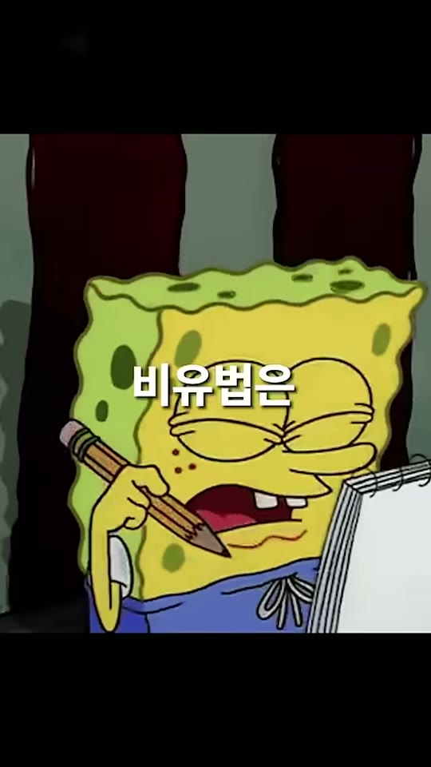
시작끝
악마 얼굴 클로즈업(뿔은 상단 모서리)
중앙 1어절 자막
샷ECU(얼굴)앵글아이레벨 정면카메라고정(자막만 작게→크게 팝)구도얼굴 꽉 채움, 입 작게 'o'동작악마가 입을 오므려 '성향보다요'대사내레이터: 정치적 성향보다요화면 자막성향보다요 (작게 60% → 100% 스케일 팝)들어오는 전환하드컷(FS→ECU 점프)효과음/음악팝(추정)역할펀치 — '정치 성향보다 세다'는 반전 한 줄
1순위
minimax-h3
대사 오디오+입모양 동시 생성, 무료·팀 기본(2D라 입만 살짝 움직이면 충분)
2순위
kling-v3-omni
레퍼런스 이미지로 2D 캐릭터 선·색 일관성 유지하며 립싱크
3순위
hailuo-2-3
눈 굴리기·입 벌림 같은 과장 코믹 리액션이 빠르고 싸다
① 이미지 프롬프트 (원본 클론)9:16 vertical 1080x1920, extreme close-up of the head filling the whole frame, flat 2D hand-drawn webcomic cartoon devil mascot with thick black ink outlines and flat cel colors, tall egg-shaped brick-red head that merges into the body (#B4352C), two small curved charcoal horns (#322831), half-lidded amber-yellow eyes with tiny dark pupils, thick straight dark eyebrows, small puckered dark-red lips, two crossed beige band-aids on the chest, long thin arms with three-fingered hands, deadpan smug expression, no gradients, no 3D shading, expression: eyebrows raised, small round 'o' mouth, horns cut off at the top corners, maroon armchair back barely visible behind, band-aids visible at the bottom edge, straight-on
② 영상 프롬프트 (원본 클론)Static extreme close-up, 2D limited animation: eyes dart once to camera, mouth pops open on the stressed syllable, quick 1-frame squash. Duration 0.93s. Line: '정치적 성향보다요'
③ 동물 버전 이미지 프롬프트9:16 vertical 1080x1920, extreme close-up of the head filling the whole frame, flat 2D hand-drawn webcomic cartoon hamster mascot 'Hamzzi' with thick black ink outlines and flat cel colors, chubby round golden-orange hamster (#E39A3B) with cream cheeks and belly (#F6E3C4), tiny red devil-horn headband (brand nod), half-lidded deadpan black eyes, thick short dark eyebrows, tiny pink nose, small puckered mouth, two crossed beige band-aids on the chest, tiny pink paws, no gradients, no 3D shading, expression: eyebrows raised, small round 'o' mouth, horn headband cut off at the top corners, maroon armchair back barely visible behind, band-aids visible at the bottom edge, straight-on
④ 동물 버전 영상 프롬프트Static extreme close-up of Hamzzi, 2D limited animation: cheeks puff, eyes dart to camera, mouth pops open on the stressed syllable. Duration 0.93s. Line: '정치적 성향보다요'
네거티브3D render, clay, photoreal, realistic human, live-action presenter, gradient shading, extra limbs, extra fingers, extra horns, deformed face, open mouth teeth close-up, text, letters, captions, watermark, logo, busy background, blurry, low resolution, jpeg artifacts
컷 15 · 근거 수치 1 — 정치 토론 이미지로 '정치 성향' 은유
41.77s → 45.1s (3.33s)
시작
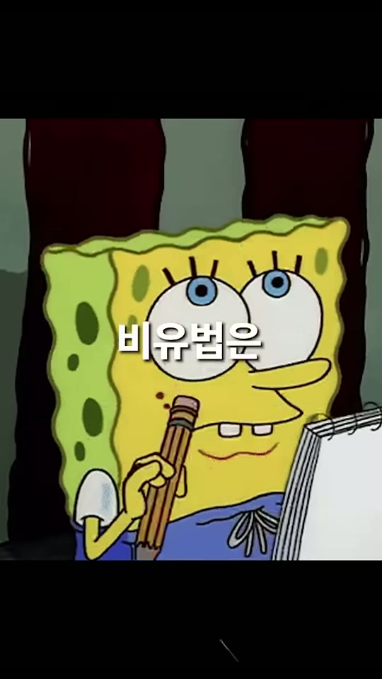
끝
좌 토론자
우 토론자
원본 자막 블러
중앙 1어절 자막
샷WS앵글아이레벨카메라고정구도레터박스 밴드 y 24~75%. 빨간 커튼 무대에 연단 두 개, 좌 회색 정장 노인·우 파란 정장 남자(손짓). 하단 원본 자막 영역은 가우시안 블러 처리(y 64~73%)동작토론 연단에서 파란 정장 캐릭터가 손을 흔들며 열변대사내레이터: 성별과 정치적 성향은 8~9%의 영향을 주는 반면화면 자막성별과 → 성향은 → 8~9%의(노랑) → 영향을 → 반면들어오는 전환하드컷효과음/음악없음역할근거 수치 1 — 정치 토론 이미지로 '정치 성향' 은유
1순위
hailuo-2-3
과장된 만화 리액션(밈) 동작이 빠르고 저렴
2순위
pixverse-v6
2D 카툰 스타일 유지력 좋음
3순위
grok-imagine-video-1-5
짧은 코믹 루프 대안
① 이미지 프롬프트 (원본 클론)9:16 vertical letterboxed 2D cartoon band (24-75% height): original yellow-skinned cartoon politicians at two wooden debate podiums on a red curtain stage, the right one in a blue suit gesturing wildly, the left one in grey suit side-eyeing, flat TV-animation colors
② 영상 프롬프트 (원본 클론)Right politician waves hands and rants, left one smirks, locked-off, 3.3s
③ 동물 버전 이미지 프롬프트9:16 letterboxed 2D cartoon band: two hamster politicians at wooden debate podiums on a red curtain stage, right hamster in blue suit gesturing wildly, left hamster in grey suit side-eyeing
④ 동물 버전 영상 프롬프트Right hamster rants with paws waving, left hamster smirks, 3.3s
네거티브copyrighted cartoon characters, celebrity likeness, real person likeness, brand logos, readable text, subtitles, watermark, extra fingers, deformed hands, distorted faces, blurry, low resolution, jpeg artifacts, oversaturated
컷 16 · 근거 수치 2 — '누가 더 세냐' 비교를 손가락질 밈으로
45.1s → 47.87s (2.77s)
시작
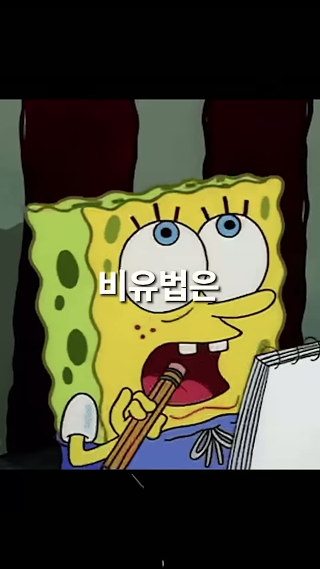
끝
좌 히어로
우 히어로
중앙 1어절 자막
샷WS앵글아이레벨카메라고정구도레터박스 밴드 y 20~79%. 좌우에 똑같은 빨파 히어로 두 명이 서로를 손가락질(서로 닮은꼴 밈)동작두 캐릭터가 서로를 가리킴대사내레이터: 비유법은 18~22%의 영향을 줬다고 합니다화면 자막비유법은 → 18~22%의(노랑) → 줬다고 → 합니다들어오는 전환하드컷효과음/음악없음역할근거 수치 2 — '누가 더 세냐' 비교를 손가락질 밈으로
1순위
hailuo-2-3
과장된 만화 리액션(밈) 동작이 빠르고 저렴
2순위
pixverse-v6
2D 카툰 스타일 유지력 좋음
3순위
grok-imagine-video-1-5
짧은 코믹 루프 대안
① 이미지 프롬프트 (원본 클론)9:16 vertical letterboxed retro 1960s-style 2D cartoon band (20-79% height): two identical original masked superheroes in red and blue suits pointing at each other in a warehouse with a parked van, limited animation look
② 영상 프롬프트 (원본 클론)Both heroes point at each other, tiny bounce, locked-off, 2.8s
③ 동물 버전 이미지 프롬프트9:16 letterboxed retro 2D cartoon band: two identical hamsters in red-blue hero suits pointing at each other beside a parked van
④ 동물 버전 영상 프롬프트Both hamsters point at each other and bob, 2.8s
네거티브copyrighted cartoon characters, celebrity likeness, real person likeness, brand logos, readable text, subtitles, watermark, extra fingers, deformed hands, distorted faces, blurry, low resolution, jpeg artifacts, oversaturated
컷 17 · 적용 파트 시작 — '여러분' 호명으로 시청자 소환
47.87s → 49.87s (2.0s)
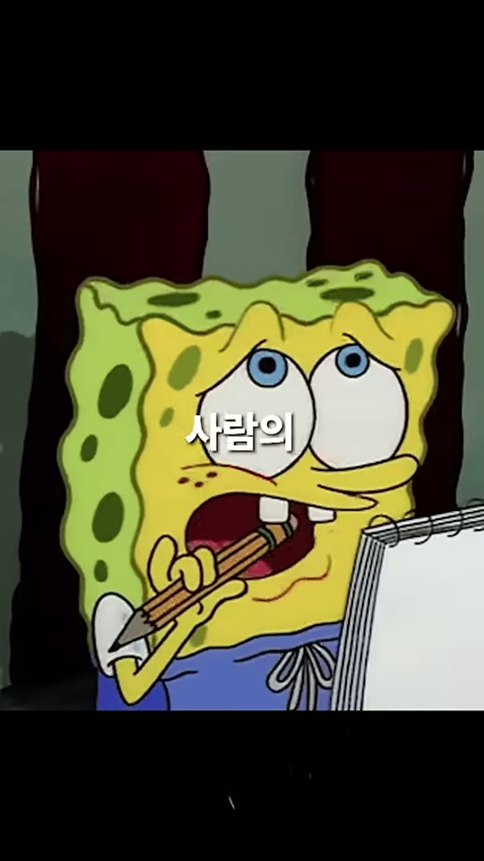
시작
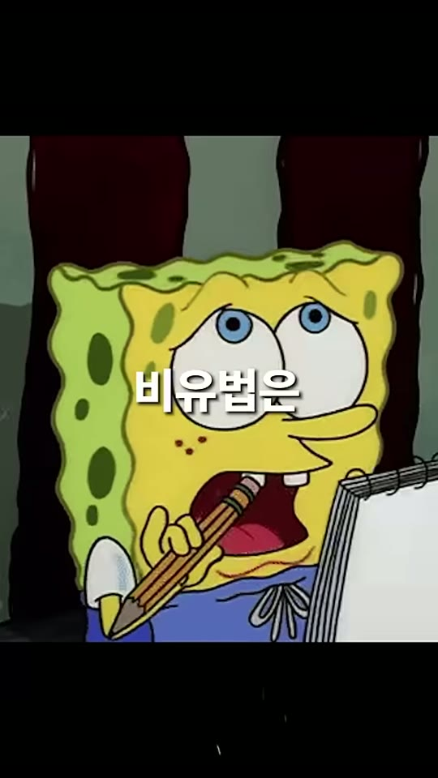
끝
교수
중앙 1어절 자막
샷MS앵글아이레벨카메라고정구도풀블리드. 칠판 앞 강연대에 선 나비넥타이 안경 교수, 중앙 배치, 우측 하단 금색 스탠드동작교수가 무표정하게 정면을 응시대사내레이터: 그러니 여러분 어떠한 새로운 정보를 접하거나화면 자막여러분 → 새로운 → 접하거나(작게→크게)들어오는 전환하드컷효과음/음악없음역할적용 파트 시작 — '여러분' 호명으로 시청자 소환
1순위
seedance-2-0
표정 클로즈업(찡그림·놀람) 미세표정 강점
2순위
kling-v3
인물 감정 연기 안정적
3순위
veo-3-1
실사 질감 최상
① 이미지 프롬프트 (원본 클론)9:16 vertical 1080x1920, a fictional balding middle-aged professor with round glasses, mustache, bow tie and tweed jacket standing at a wooden lectern with a brass lamp, chalkboard with faint handwriting behind, cinematic film still, soft key light
② 영상 프롬프트 (원본 클론)Professor stares at camera deadpan, tiny blink, locked-off, 2.0s
③ 동물 버전 이미지 프롬프트9:16 vertical, a hamster professor with round glasses, mustache fur, bow tie and tweed jacket at a wooden lectern with a brass lamp, chalkboard behind, cinematic
④ 동물 버전 영상 프롬프트Hamster professor stares deadpan, whiskers twitch, 2.0s
네거티브copyrighted cartoon characters, celebrity likeness, real person likeness, brand logos, readable text, subtitles, watermark, extra fingers, deformed hands, distorted faces, blurry, low resolution, jpeg artifacts, oversaturated
컷 18 · '이간질' 상황을 시각화
49.87s → 52.13s (2.27s)
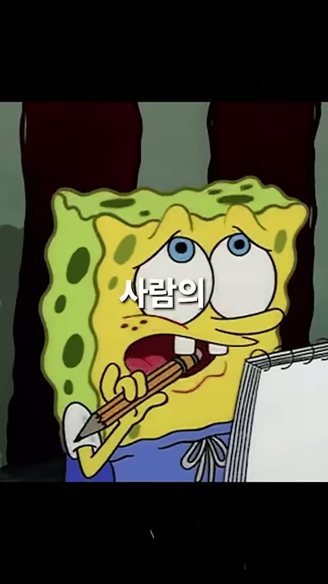
시작
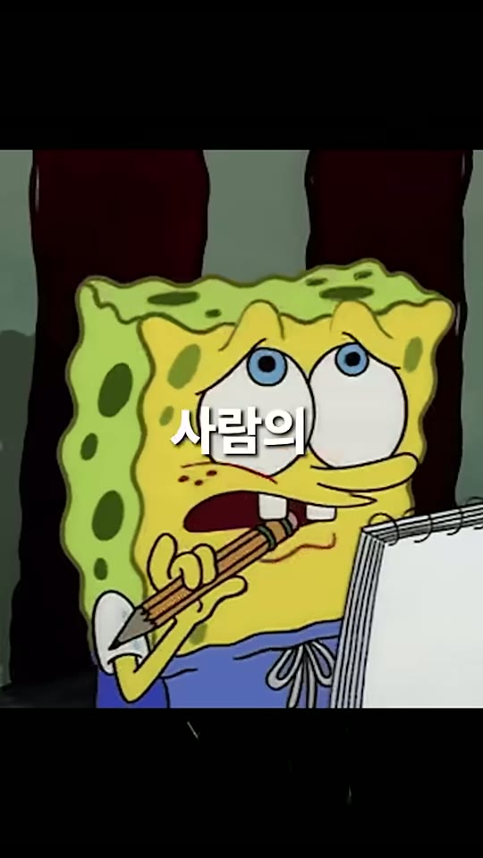
끝
여성
귓속말 남자
중앙 1어절 자막
샷MCU(투샷)앵글아이레벨카메라고정구도풀블리드. 중앙 붉은 머리 여성이 눈을 크게 뜨고 정면, 왼쪽 뒤에서 남자가 귓속말동작남자가 여성 귀에 속삭이고 여성은 동공 확장된 채 굳음대사내레이터: 이간질이나 정치판 속에서 혼란스럽다면화면 자막이간질이나 → 정치판 → 속에서 → 혼란스럽다면들어오는 전환하드컷효과음/음악없음역할'이간질' 상황을 시각화
1순위
seedance-2-0
표정 클로즈업(찡그림·놀람) 미세표정 강점
2순위
kling-v3
인물 감정 연기 안정적
3순위
veo-3-1
실사 질감 최상
① 이미지 프롬프트 (원본 클론)9:16 vertical 1080x1920, a fictional red-haired woman in a pinstripe blazer and leopard blouse at a busy bar, eyes wide in shock, while a fictional man leans in from behind-left whispering into her ear, warm bokeh lights, cinematic film still
② 영상 프롬프트 (원본 클론)Man whispers, woman's eyes widen and she freezes, subtle push-in, 2.3s
③ 동물 버전 이미지 프롬프트9:16 vertical, a red-furred hamster in a pinstripe blazer, eyes wide in shock, while another hamster whispers into her ear from behind-left, warm bokeh bar
④ 동물 버전 영상 프롬프트Hamster whispers, the other hamster freezes wide-eyed, 2.3s
네거티브copyrighted cartoon characters, celebrity likeness, real person likeness, brand logos, readable text, subtitles, watermark, extra fingers, deformed hands, distorted faces, blurry, low resolution, jpeg artifacts, oversaturated
컷 19 · 공감 — 혼란스러운 감정을 얼굴로
52.13s → 55.83s (3.7s)
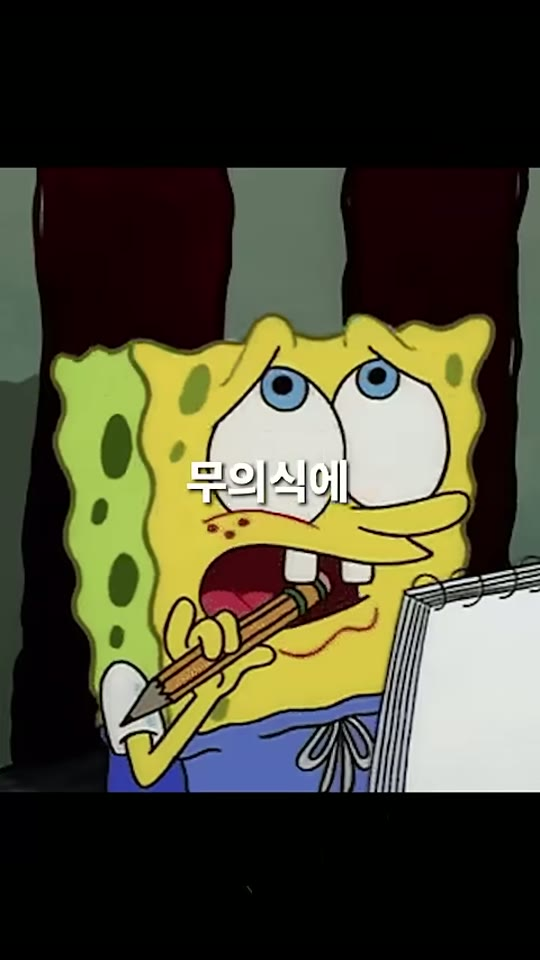
시작
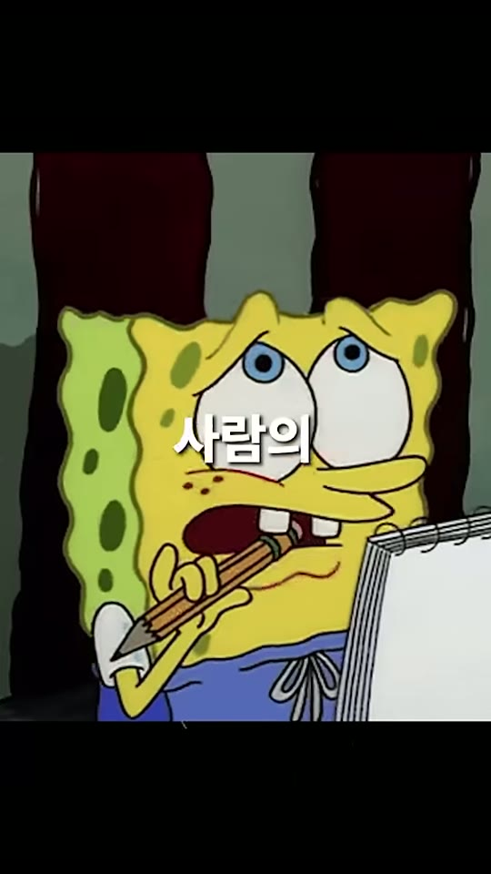
끝
남자 얼굴+손
중앙 1어절 자막
샷CU앵글아이레벨카메라고정. 병합: 52.13 / 53.93 (자막 교체로 오검출)구도풀블리드. 수염 난 남자 얼굴이 화면 대부분, 양손으로 관자놀이를 문지르며 눈 감음동작두통 오는 듯 관자놀이를 문지르며 괴로워함대사내레이터: 이상한 메타포, 비유가 얹어져 인지적 왜곡이 일어나고 있는 것은 아닌지화면 자막이상한 → metaphor(빨강 #9C0009) → 비유가(노랑) → 얹어져 → 일어나고 → 인지적 → 왜곡이 → 있는 → 아닌지들어오는 전환하드컷효과음/음악없음역할공감 — 혼란스러운 감정을 얼굴로
1순위
seedance-2-0
표정 클로즈업(찡그림·놀람) 미세표정 강점
2순위
kling-v3
인물 감정 연기 안정적
3순위
veo-3-1
실사 질감 최상
① 이미지 프롬프트 (원본 클론)9:16 vertical 1080x1920, close-up of a fictional bearded man in his 30s with messy hair, eyes closed, both hands rubbing his temples in a headache, warm indoor light, cinematic film still
② 영상 프롬프트 (원본 클론)He rubs his temples, winces, eyes squeeze and half-open, 3.7s
③ 동물 버전 이미지 프롬프트9:16 vertical close-up of a hamster with messy fur rubbing its temples with both paws, eyes squeezed shut, warm light
④ 동물 버전 영상 프롬프트Hamster rubs temples, winces, eyes half-open, 3.7s
네거티브copyrighted cartoon characters, celebrity likeness, real person likeness, brand logos, readable text, subtitles, watermark, extra fingers, deformed hands, distorted faces, blurry, low resolution, jpeg artifacts, oversaturated
컷 20 · 결론 — 행동 제안
55.83s → 56.97s (1.13s)
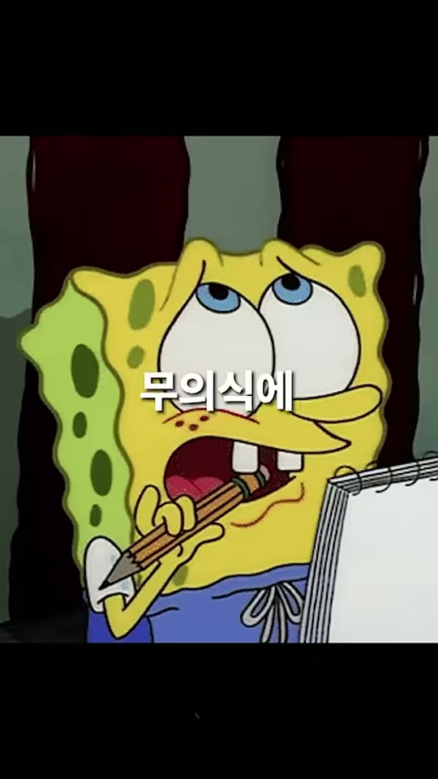
시작
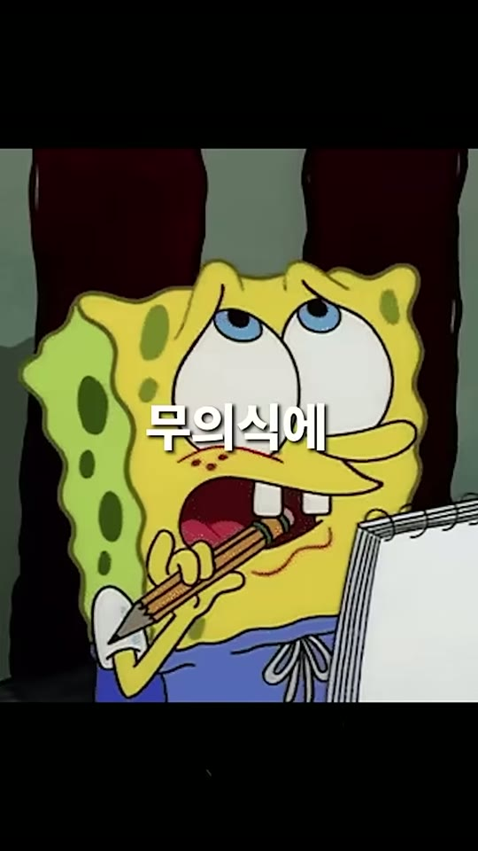
끝
악마 호스트(머리~다리)
안락의자
중앙 1어절 자막
샷MFS(의자, 1번보다 타이트)앵글아이레벨카메라고정구도머리 상단 y≈13%, 몸통이 화면 대부분동작악마가 입을 벌려 결론을 말함대사내레이터: 따져 볼 필요가 있겠습니다화면 자막필요가 → 있겠습니다들어오는 전환하드컷효과음/음악없음역할결론 — 행동 제안
1순위
minimax-h3
대사 오디오+입모양 동시 생성, 무료·팀 기본(2D라 입만 살짝 움직이면 충분)
2순위
kling-v3-omni
레퍼런스 이미지로 2D 캐릭터 선·색 일관성 유지하며 립싱크
3순위
hailuo-2-3
눈 굴리기·입 벌림 같은 과장 코믹 리액션이 빠르고 싸다
① 이미지 프롬프트 (원본 클론)9:16 vertical 1080x1920, full shot, flat 2D hand-drawn webcomic cartoon devil mascot with thick black ink outlines and flat cel colors, tall egg-shaped brick-red head that merges into the body (#B4352C), two small curved charcoal horns (#322831), half-lidded amber-yellow eyes with tiny dark pupils, thick straight dark eyebrows, small puckered dark-red lips, two crossed beige band-aids on the chest, long thin arms with three-fingered hands, deadpan smug expression, no gradients, no 3D shading, slouching lazily in a dark maroon wingback armchair (#771E22) with short wooden legs, pure black background (#000000), character centered, head top at 17% of frame height, chair filling the full width, eye-level straight-on, slightly tighter framing with head top at 13%
② 영상 프롬프트 (원본 클론)Locked-off camera, limited 2D animation at 12fps: the devil mascot stays slouched, blinks once, lips move slightly in sync with a calm female Korean narrator, tiny head tilt. Duration 1.13s. Line: '따져 볼 필요가 있겠습니다'
③ 동물 버전 이미지 프롬프트9:16 vertical 1080x1920, full shot, flat 2D hand-drawn webcomic cartoon hamster mascot 'Hamzzi' with thick black ink outlines and flat cel colors, chubby round golden-orange hamster (#E39A3B) with cream cheeks and belly (#F6E3C4), tiny red devil-horn headband (brand nod), half-lidded deadpan black eyes, thick short dark eyebrows, tiny pink nose, small puckered mouth, two crossed beige band-aids on the chest, tiny pink paws, no gradients, no 3D shading, slouching lazily in a dark maroon wingback armchair (#771E22) with short wooden legs, pure black background (#000000), hamster centered, head top at 17% of frame height, chair filling the full width, eye-level straight-on, slightly tighter framing with head top at 13%
④ 동물 버전 영상 프롬프트Locked-off camera, limited 2D animation at 12fps: Hamzzi stays slouched in the armchair, whiskers twitch, blinks once, small mouth moves in sync with a calm female Korean narrator. Duration 1.13s. Line: '따져 볼 필요가 있겠습니다'
네거티브3D render, clay, photoreal, realistic human, live-action presenter, gradient shading, extra limbs, extra fingers, extra horns, deformed face, open mouth teeth close-up, text, letters, captions, watermark, logo, busy background, blurry, low resolution, jpeg artifacts
컷 21 · 엔딩 펀치 + 루프 — 0.39초 만에 끝나 첫 프레임 의자샷으로 자연 루프
56.97s → 57.35s (0.39s)
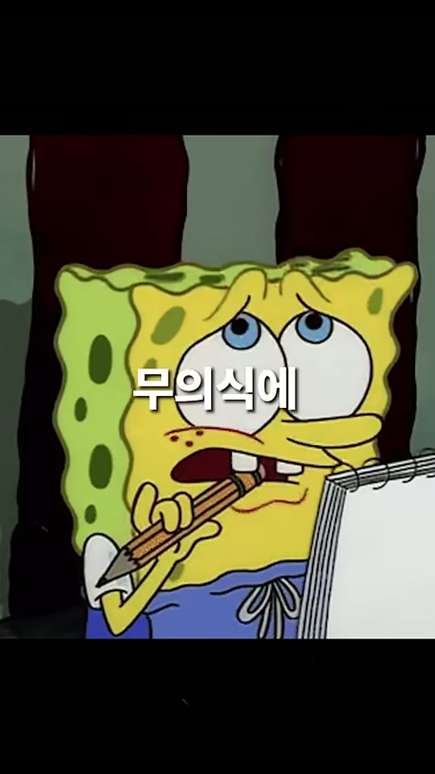
시작
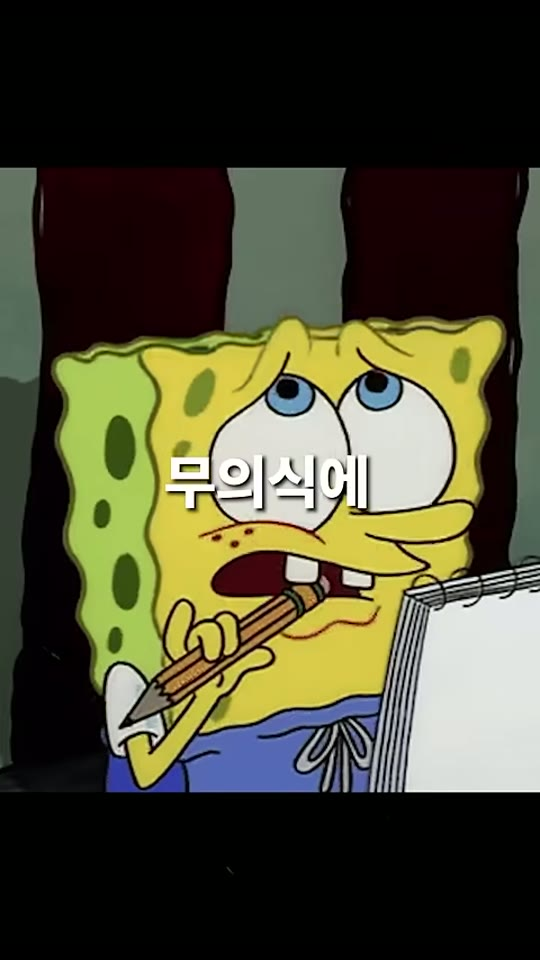
끝
악마 얼굴 클로즈업(뿔은 상단 모서리)
중앙 1어절 자막
샷ECU(얼굴)앵글아이레벨카메라고정구도얼굴 꽉 채움, 동그란 안경 + 우측 렌즈 반짝 스파클, 양볼 빨간 블러시동작악마가 안경을 쓴 채 뿌듯하게 '후후..'대사내레이터: 후후..화면 자막후후..들어오는 전환하드컷효과음/음악반짝 '팅' 효과음(추정)역할엔딩 펀치 + 루프 — 0.39초 만에 끝나 첫 프레임 의자샷으로 자연 루프
1순위
minimax-h3
대사 오디오+입모양 동시 생성, 무료·팀 기본(2D라 입만 살짝 움직이면 충분)
2순위
kling-v3-omni
레퍼런스 이미지로 2D 캐릭터 선·색 일관성 유지하며 립싱크
3순위
hailuo-2-3
눈 굴리기·입 벌림 같은 과장 코믹 리액션이 빠르고 싸다
① 이미지 프롬프트 (원본 클론)9:16 vertical 1080x1920, extreme close-up of the head filling the whole frame, flat 2D hand-drawn webcomic cartoon devil mascot with thick black ink outlines and flat cel colors, tall egg-shaped brick-red head that merges into the body (#B4352C), two small curved charcoal horns (#322831), half-lidded amber-yellow eyes with tiny dark pupils, thick straight dark eyebrows, small puckered dark-red lips, two crossed beige band-aids on the chest, long thin arms with three-fingered hands, deadpan smug expression, no gradients, no 3D shading, expression: smug, wearing round glasses with a white sparkle on the right lens, red blush on both cheeks, lips puckered, horns cut off at the top corners, maroon armchair back barely visible behind, band-aids visible at the bottom edge, straight-on
② 영상 프롬프트 (원본 클론)Static extreme close-up, 2D limited animation: eyes dart once to camera, mouth pops open on the stressed syllable, quick 1-frame squash. Duration 0.39s. Line: '후후..'
③ 동물 버전 이미지 프롬프트9:16 vertical 1080x1920, extreme close-up of the head filling the whole frame, flat 2D hand-drawn webcomic cartoon hamster mascot 'Hamzzi' with thick black ink outlines and flat cel colors, chubby round golden-orange hamster (#E39A3B) with cream cheeks and belly (#F6E3C4), tiny red devil-horn headband (brand nod), half-lidded deadpan black eyes, thick short dark eyebrows, tiny pink nose, small puckered mouth, two crossed beige band-aids on the chest, tiny pink paws, no gradients, no 3D shading, expression: smug, wearing round glasses with a white sparkle on the right lens, red blush on both cheeks, lips puckered, horn headband cut off at the top corners, maroon armchair back barely visible behind, band-aids visible at the bottom edge, straight-on
④ 동물 버전 영상 프롬프트Static extreme close-up of Hamzzi, 2D limited animation: cheeks puff, eyes dart to camera, mouth pops open on the stressed syllable. Duration 0.39s. Line: '후후..'
네거티브3D render, clay, photoreal, realistic human, live-action presenter, gradient shading, extra limbs, extra fingers, extra horns, deformed face, open mouth teeth close-up, text, letters, captions, watermark, logo, busy background, blurry, low resolution, jpeg artifacts
✂️ 편집 키트
타임라인0.00-1.20s 훅 1; 1.20-3.67s 훅 2; 3.67-4.13s 질문 던지기; 4.13-5.70s 정답 제시; 5.70-8.60s 권위 부여(대학 연구); 8.60-12.20s 실험 설정 설명; 12.20-13.87s 전환 멘트; 13.87-21.87s 비교 퀴즈; 21.87-29.10s 근거 수치 제시; 29.10-29.73s 전환; 29.73-37.73s 대조 결과; 37.73-40.33s 밈 리액션; 40.33-40.83s 빌드업; 40.83-41.77s 펀치; 41.77-45.10s 근거 수치 1; 45.10-47.87s 근거 수치 2; 47.87-49.87s 적용 파트 시작; 49.87-52.13s '이간질' 상황을 시각화; 52.13-55.83s 공감; 55.83-56.97s 결론; 56.97-57.35s 엔딩 펀치 + 루프
HyperFrames 편집 프롬프트 (Claude에 그대로 붙여넣기)HyperFrames로 1080x1920(9:16) 30fps, 총 57350ms 쇼츠를 만들어줘. 고정 제목·댓글 카드·고정 밴드는 넣지 마(원본에 없음).
[전역] 배경 #000000. 전 구간 위에 흰 먼지·스크래치 입자 레이어(screen 블렌드, 불투명도 35%, 입자 2~6px, 초당 20~40개 무작위 낙하). 자막: Pretendard ExtraBold 92px 흰색, 소프트 그림자(검정 60%, 4px), 화면 정중앙(540,960) 1어절씩, 등장 시 scale 0.7→1.0 120ms ease-out, 퇴장 애니메이션 없이 다음 어절로 하드 교체. 키워드 노랑 #F7DE12, 영어 키워드 딥레드 #9C0009. 모든 장면 전환은 하드컷(0ms).
[장면 타임라인]
S01 0–1200ms: s01m.jpg | 검정 캔버스 위 안락의자가 가로 100%를 채우고 악마가 중앙에 푹 기대 앉음. 머리 상단 y≈17%, 의자 | 자막: '이것'을 → 사용하면 → 잘 (1어절씩, '이것' 따옴표 포함 노랑 #F7DE12)
S02 1200–3670ms: s02m.jpg | 빨간 무대 커튼 앞 정장 마리오네트 인형이 중앙, 화면 상단에서 사람 손이 조종 막대를 쥠(손 y 0~15% | 자막: 사람들의 → 마음을 → 마음대로 → 조종할 → 하는데요
S03 3670–4130ms: s03m.jpg | 얼굴이 화면을 꽉 채움(y 8~99%), 뿔이 좌우 상단 모서리에서 잘림, 눈 라인 y≈30%, 자막은 코 | 자막: 뭘까요? (흰색)
S04 4130–5700ms: s04a.jpg / s04z.jpg | 순검정 배경 중앙(y≈50%)에 단어 한 개, 여백 전체 + 흰 먼지 입자 | 자막: metaphor(영문, 딥레드 #9C0009, 굵은 산세리프) → 비유법(노랑 #F6DF17)
S05 5700–8600ms: s05m.jpg | 풀블리드. 상단 1/3에 붉은 기와 대학 본관+산, 중앙 가로로 나무 줄, 하단 1/3 잔디광장과 꽃 로고 | 자막: 스탠포드 → 대학 → 연구팀은 → 1482명의(숫자+명 노랑) → 학생들에게
S06 8600–12200ms: s06m.jpg | 레터박스 밴드 y 18~82%(검정 상하). 금발 여성이 책상에서 종이 두 장을 좌우로 들고 봄. 종이 위에 | 자막: 도시의 → 범죄에 → 2가지 → 보고서를 → 해결 → 방법을 → 제시하게 / 고정 라벨 'A 보고서' 'B 보고서'(검정 박스
S07 12200–13870ms: s08m.jpg | 의자가 화면 y 21~84% 안에 들어오게 축소, 의자 뒤로 큰 검은 뿔 실루엣이 좌우로 뻗음. 자막 y≈5 | 자막: 여기서 → 재밌는 → 하나 → 주는데요
S08 13870–21870ms: s09m.jpg | 화면 상하 2분할: 상단(y 0~50%) 어두운 사자 입 사진 위 'A' + 2줄 설명, 하단(y 50~10 | 자막: 패널: 'A / 짐승처럼 이웃들 속에 숨어 도시를 위협하는 범죄들' 'B / 바이러스처럼 이웃들을 괴롭히며 도시를 감염시키는
S09 21870–29100ms: s10m.jpg | 검정 배경. 상단 y≈9% 제목 'A (짐승 비유)'(짐승 노랑), 좌측 L자 흰 축(x 13~40%, y | 자막: 읽은 → 중 → 75%가 → 건설 → 처벌 → 중심의 → 제안했고 → 25%만이 → 교육과 → 같은 → 개혁을 → 제시했습니다
S10 29100–29730ms: s11m.jpg | 얼굴이 화면 꽉 채움, 입 크게 벌림, 자막 y≈50% | 자막: 반면
S11 29730–37730ms: s12m.jpg | B 그래프는 9번과 같은 규격(제목 'B (바이러스 비유)', 바이러스 노랑). 빨강 56% / 노랑 44% | 자막: B를 → 학생들은 → 56%가 → 처벌 → 중심의 → 제안했고 → 44%가 → 사회적 → 개혁을 → 제안했습니다 → 이는 →
S12 37730–40330ms: s13a.jpg | 레터박스 밴드 y 17~83%. 노란 스펀지 캐릭터가 메모장에 연필로 미친 듯이 필기 → 눈 풀린 채 혀 내 | 자막: 비유법은 → 무의식에 → 엄청난 → 영향을 → 줍니다
S13 40330–40830ms: s29m.jpg | 1번과 같은 의자 전신 구도(y 14~88%) | 자막: 심지어
S14 40830–41770ms: s30m.jpg | 얼굴 꽉 채움, 입 작게 'o' | 자막: 성향보다요 (작게 60% → 100% 스케일 팝)
S15 41770–45100ms: s31m.jpg | 레터박스 밴드 y 24~75%. 빨간 커튼 무대에 연단 두 개, 좌 회색 정장 노인·우 파란 정장 남자(손짓 | 자막: 성별과 → 성향은 → 8~9%의(노랑) → 영향을 → 반면
S16 45100–47870ms: s32m.jpg | 레터박스 밴드 y 20~79%. 좌우에 똑같은 빨파 히어로 두 명이 서로를 손가락질(서로 닮은꼴 밈) | 자막: 비유법은 → 18~22%의(노랑) → 줬다고 → 합니다
S17 47870–49870ms: s33m.jpg | 풀블리드. 칠판 앞 강연대에 선 나비넥타이 안경 교수, 중앙 배치, 우측 하단 금색 스탠드 | 자막: 여러분 → 새로운 → 접하거나(작게→크게)
S18 49870–52130ms: s34m.jpg | 풀블리드. 중앙 붉은 머리 여성이 눈을 크게 뜨고 정면, 왼쪽 뒤에서 남자가 귓속말 | 자막: 이간질이나 → 정치판 → 속에서 → 혼란스럽다면
S19 52130–55830ms: s35m.jpg | 풀블리드. 수염 난 남자 얼굴이 화면 대부분, 양손으로 관자놀이를 문지르며 눈 감음 | 자막: 이상한 → metaphor(빨강 #9C0009) → 비유가(노랑) → 얹어져 → 일어나고 → 인지적 → 왜곡이 → 있는 → 아
S20 55830–56970ms: s37m.jpg | 머리 상단 y≈13%, 몸통이 화면 대부분 | 자막: 필요가 → 있겠습니다
S21 56970–57350ms: s38m.jpg | 얼굴 꽉 채움, 동그란 안경 + 우측 렌즈 반짝 스파클, 양볼 빨간 블러시 | 자막: 후후..
[그래픽 디테일] S04: 'metaphor' 4133–4930ms → '비유법' 4930–5700ms. S08: A 패널 13867ms 즉시, B 패널 15500ms 400ms 페이드인, 21500ms A 텍스트 scale 1.12·B 텍스트 0.7로 200ms. S09: 빨강 막대(#A30003) 22200ms부터 600ms 성장 0→75%, 노랑 막대(#F8DD08) 25500ms부터 400ms 0→25%, 라벨 카운트업. S11: 빨강 30300ms 0→56%, 노랑 33300ms 0→44%, 35500ms 두 그래프 400ms 축소 후 좌(A, 불투명 50%→100%)·우(B) 나란히. S14: '성향보다요' scale 0.6→1.0 150ms. S21: 안경 스파클 56967ms에 120ms 반짝.
[오디오] 내레이션(여성, 또박또박 빠른 정보 톤) + 로파이 BGM -22dB 덕킹, 컷 포인트에 팝 효과음, 최종 -13 LUFS.
✅ 똑같이 만들기 체크리스트
고정 제목·댓글 카드 넣지 말 것 — 검정 9:16 캔버스 + 정중앙 1어절 자막이 이 영상의 정체성
레터박스 밴드 위치를 장면별 실측값(18~82 / 17~83 / 24~75 / 20~79%)대로
전 구간 흰 먼지 오버레이(screen 35%)와 하드컷만 사용(디졸브 금지)
밈·영화 원본 대신 오리지널 캐릭터·가상 인물로 생성(저작권·초상권)
연구 수치(1482명·75/56%·8~9% vs 18~22%)는 영상 발화 기준 — 리메이크 전 원 논문으로 재확인(추정 오류 가능)
라우드니스 -13 LUFS 전후(원본 -12.6), BGM은 보이스에 덕킹
🐹 동물 버전 기획호스트 악마 → '햄찌'(주황 햄스터, 빨간 악마뿔 머리띠로 채널 톤 유지, 가슴 반창고 2개·자주색 윙백 의자·반쯤 감긴 무표정 눈 그대로). 의자 전신/얼굴 ECU/엔딩 안경 스파클 3종 컷을 같은 구도로 그림. B롤 인물·밈 캐릭터는 옷 입은 햄스터 세계관으로 교체(보고서 읽는 햄스터, 햄스터 교수, 필기하는 햄찌 밈, 햄스터 토론자). 그대로 둘 것: 대본·타이밍·검정 캔버스·1어절 중앙 자막·색상 HEX·그래프·먼지 오버레이·하드컷 리듬. 바꿀 것: 캐릭터 외형, 사자/바이러스 사진은 '햄스터 시점의 맹수 / 해바라기씨 모양 세균'으로 톤만 귀엽게.